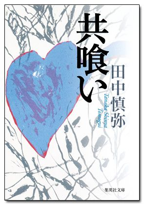
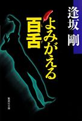
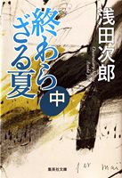
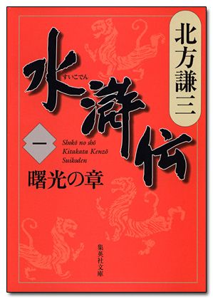
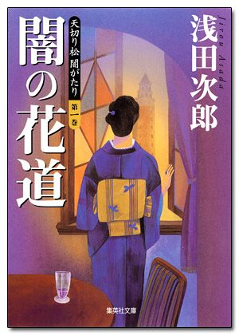
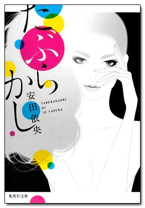

| 集英社電子書籍ガイド２０１４-２０１５ 集英社文庫編 | |
| 集英社デジタル出版室 | |
| (2014) | |
この本は縦書きでレイアウトされています。
また、ご覧になる機種により、表示の差が認められることがあります。
はじめに
本書をダウンロードしていただきありがとうございます。
集英社は２０００年９月より電子書籍を配信してきました。配信を始めた当初より作品数も増え、２０１４年11 月現在、約２６００作品を配信中です。
配信点数が増えていくにつれて、最近では「どの作品が電子書籍で読めるの？」という声も聞こえるようになりました。
そういったご要望にお応えして、小社配信の集英社文庫電子版の中から〈現代小説〉〈ミステリー〉〈恋愛・青春〉〈歴史・時代小説〉〈エッセイ〉〈ノンフィクション〉〈現代人必読書〉の７ジャンルで、名作・傑作を選定いたしました。
また、既成の文学観にとらわれない気鋭の新人を輩出してきた「すばる文学賞」、小説の世界に常に新しい風を送り込む「小説すばる新人賞」の電子化作品も合わせてご紹介いたします。
すでに電子書籍を体験したことのある方も、まだ未体験の方も、本書をお手持ちの端末にダウンロードして、デジタル読書ライフの一助にしていただければ幸いです。
２０１４年11 月吉日
集英社 デジタル出版室
＊本書の選定は２０００年９月から２０１４年10 月までの電子書店での集計データを基にしています。
＊「水滸伝」「東京バンドワゴン」等のシリーズ作品は、基本的に第１巻の集計データを参考にしています。
＊各電子書籍の価格は、電子書店でご確認ください。
【目次】
◆ 現代小説
・平成生まれの新星が描いた、きらめく青春群像劇
桐島、部活やめるってよ 朝井リョウ
・大生部教授が繰り広げる新興宗教との闘い
ガダラの豚 Ⅰ 中島らも
・血のしがらみに翻弄されて――
共喰い 田中慎弥
・そのホテルは任侠団体専用!?
プリズンホテル １ 夏 浅田次郎
・日本中が待っていた歴史的ホームドラマの決定版
東京バンドワゴン 小路幸也
・パワー全開！ 万城目ワールド！
偉大なる、しゅららぼん 万城目 学
・第１１７回直木賞受賞作！
鉄道員 浅田次郎
・受験戦争を軽快に笑い飛ばす！
家族ゲーム 本間洋平
・森見ファンタジーの真骨頂！
宵山万華鏡 森見登美彦
・どうやら夫は仕事ができないらしい。
我が家の問題 奥田英朗
神々の山嶺（上） 夢枕 獏／思い出のとき修理します 谷 瑞恵／ワセダ三畳青春記 高野秀行／光 三浦しをん／つるかめ助産院 小川 糸／いねむり先生 伊集院 静／天に堕ちる 唯川 恵／龍の哭く街 今野 敏／真夜中のマーチ 奥田英朗／永遠の出口 森 絵都
◆ ミステリー
・警察小説の金字塔！ 公安警察サスペンス「百舌シリーズ」
百舌の叫ぶ夜 坂 剛
・デビュー35 周年に放つ新感覚の警察小説！
第三の時効 横山秀夫
・地球滅亡へのカウントダウンを生きる群像を描く
終末のフール 伊坂幸太郎
・デビュー35 周年に放つ新感覚の警察小説！
スクープ 今野敏
・美人ＯＬ殺害をめぐり「噂話」が暴走する――
白ゆき姫殺人事件 湊 かなえ
・このうえなく哀切な、米澤ミステリの新境地
追想五断章 米澤穂信
・警察小説のニューヒーロー誕生！
検証捜査 堂場瞬一
・人々の手を転々とする「毒」...オムニバス長編ミステリー
毒 ＰＯＩＳＯＮ 赤川次郎
・天才・乙一の傑作短編集
ＺＯＯ １ 乙一
・第23 回山本周五郎賞受賞作!!
光媒の花 道尾秀介
貴族探偵 麻耶雄嵩／夏と花火と私の死体 乙一／怪物 福田和代／暗黒童話 乙一／インターセックス 帚木 生／鬼の棲む家 吉村達也／午前０時の忘れもの 赤川次郎／十津川警部 愛と祈りのＪＲ身延線 西村京太郎／吸血鬼はお年ごろ 赤川次郎／メルカトルと美袋のための殺人 麻耶雄嵩
◆ 恋愛
・命を賭けた恋...。第８回柴田錬三郎賞受賞作！
白 れんれん 林 真理子
・娼夫リョウ、20 歳の夏の光と影を描く物語
娼年 石田衣良
・守ってあげたい。誰にも渡したくない。
・みずみずしい感性で描かれた純愛小説
天使の卵 エンジェルス・エッグ 村山由佳
・温泉を訪れた、男女５組の恋物語
初恋温泉 吉田修一
・対照的な二人の女たちをとおして描く「幸福」の意味
肩ごしの恋人 唯川 恵
・結婚、離婚、新たな出会い...揺れる30 代男女
三月の招待状 角田光代
・愛なのか、意地なのか――
孤独で優しい夜 唯川 恵
・顔も知らないあなたにこんなにも惹かれるのはなぜ？
ＲＥＶＥＲＳＥ リバース 石田衣良
・恋はときどき残酷で、だけどとても優しい
１ポンドの悲しみ 石田衣良
◆ 歴史・時代小説
・玉音放送後に起きた「知られざる」戦い
終わらざる夏 上 浅田次郎
・第９回司馬遼太郎賞を受賞した世紀の傑作！
水滸伝 一 曙光の章 北方謙三
・『水滸伝』より受け継がれる圧倒的傑作
楊令伝 一 玄旗の章 北方謙三
・帝都の闇を駆ける伝説の怪盗たちの物語
天切り松 闇がたり 第一巻 浅田次郎
・ぶっちぎりの笑いと涙満載の傑作人情巨編
王妃の館（上） 浅田次郎
・激動のフランス革命を描きつくす超大作
革命のライオン 小説フランス革命１ 佐藤賢一
・官兵衛最後の采配を描く、戦国小説の白眉
風の如く 水の如く 安部龍太郎
・手に汗握る中世版法廷サスペンス。第１２１回直木賞受賞作！
王妃の離婚 佐藤賢一
・日本の運命を変えた知られざる物語が今、始まる
終戦のエンペラー 陛下をお救いなさいまし 岡本嗣郎
・米沢藩の財政を建て直した名君の感動の生涯
全一冊 小説 上杉鷹山 童門冬二
傭兵ピエール（上） 佐藤賢一／鍋奉行犯科帳 田中啓文／なでしこ御用帖 宇江佐真理／斬られ権佐 宇江佐真理／深川恋物語 宇江佐真理／聞き屋与平 江戸夜咄草 宇江佐真理／不忠臣蔵 井上ひさし／武士猿 今野 敏／会津士魂 一 会津藩 京へ 早乙女 貢
◆ ノンフィクション
・ゲリラとアヘン栽培！ ７か月の仰天本格ルポ
【カラー版】アヘン王国潜入記 高野秀行
・開高健ノンフィクション賞、大宅壮一ノンフィクション賞、梅棹忠夫・山と探検文学賞、トリプル受賞作!!
・心躍る紀行文学の古典がオリジナル写真満載の電子特別版で登場！
【電子特別版】オーパ！ 開高 健
・人生初のマラソン大会はサハラ砂漠!?
世にも奇妙なマラソン大会 高野秀行
・気鋭の探険作家が放つ謎の生き物とそれを追う人間たちのドキュメント！
雪男は向こうからやって来た 角幡唯介
・本当に豊かな生、また死とはなんだろう
がんばらない 鎌田 實
・会社を捨て、家族を捨て、フィリピンに飛んだ男たち――
・謎の怪獣モケーレ・ムベンベ発見に挑む！
幻獣ムベンベを追え 高野秀行
・20 世紀を駆け抜けた革命家の実像に迫る
冒険者カストロ 佐々木 譲
・旅行ガイドは軍情報部!? 爆笑必至の珍道中記！
【カラー版】ミャンマーの柳生一族 高野秀行
◆ エッセイ
・稀代の作家による、軽妙洒脱な生き方指南！
ま、いっか。 浅田次郎
・フーテン仲間とくり広げる爆笑必至の青春グラフィティ
僕に踏まれた町と僕が踏まれた町 中島らも
・『悪人』の著者が描く、「あの人」と「あの場所」の記憶
あの空の下で 吉田修一
・『暮しの手帖』編集長が大切にしている、日々のベーシック
いつもの毎日。 衣食住と仕事 松浦弥太郎
・選びぬかれた珍妙な悩みに、鬼才・中島らもが繰り出す名（迷）回答の数々
・安くて美味くて心安らぐ酒場を探訪する
せんべろ探偵が行く 中島らも
・「自分をきちんと好きになり、やわらかな心をもって生きていこう。」
傷つきやすくなった世界で 石田衣良
・愛しすぎる女たちはいつだって切ない
・美の最終兵器的エッセイ！
ブスのくせに！ 最終決定版 姫野カオルコ
・森家の「工作中」な日常と創作の舞台裏
工作少年の日々 森 博嗣
あなたに褒められたくて 高倉 健／正しい欲望のススメ 一条ゆかり／みんな、どうして結婚してゆくのだろう 姫野カオルコ／獏の食べのこし 中島らも／恋は底ぢから 中島らも／あきらめない 鎌田 實／おばさん未満 酒井順子／きままな娘 わがままな母 藤堂志津子／行動することが生きることである 生き方についての３４３の知恵 宇野千代／本当の自分に出会う旅 鎌田 實／夫婦で行くイタリア歴史の街々 清水義範
◆ 現代人必読書
・全日本人必読！ 世界がわかるための基礎知識
そうだったのか！ 現代史 池上 彰
・池上彰がわかりやすく解説する世界の対立
池上彰の大衝突 終わらない巨大国家の対立 池上 彰
・科学の世界はこんなに不思議で面白い
科学の扉をノックする 小川洋子
・『怖い絵』の著者が描く王族たちの光と影
残酷な王と悲しみの王妃 中野京子
・数学的な考え方は日常生活でこんなに役に立つ
数学力は国語力 齋藤 孝
・現役精神科医師が語る壮絶人間ドキュメント
精神科ＥＲ 緊急救命室 備瀬哲弘
・日高先生の人間、どうぶつ、いきものがたり
世界を、こんなふうに見てごらん 日高敏隆
・名作に隠された真実に迫る傑作評伝
・古事記の成り立ちと魅力をやさしく解説する究極の一冊
古事記とは何か 稗田阿礼はかく語りき 長部日出雄
・「神の手」と呼ばれる医師が描く、移植の最前線！
移植病棟24 時 加藤友朗
集英社電子書籍ガイド２０１４－２０１５ 集英社文庫編
平成生まれの新星が描いた、きらめく青春群像劇。
桐島、部活やめるってよ
朝井リョウ

第22 回小説すばる新人賞受賞作！
映画化大ヒット小説！ きっかけは、キャプテンの桐島が突然バレー部をやめたことだった。そこから波紋が広がっていく。地方の県立高校のバレー部、ブラスバンド部、女子ソフトボール部、映画部、野球部――。それぞれの部活で、教室で、グラウンドで、５つの物語がリンクする。彼らがそれぞれ抱える問題は？ 桐島はなぜ部活をやめたのか？
アフリカの呪術医研究の第一人者、大生部教授が繰り広げる新興宗教との闘い。
ガダラの豚 Ⅰ
中島らも
日本推理作家協会賞受賞作。
アフリカの呪術医研究の第一人者、大生部多一郎は、テレビの人気タレント教授。超能力ブームで彼の著者「呪術パワーで殺す！」はベストセラーになった。しかし、妻の逸美は８年前の娘・志織のアフリカでの気球事故での死以来、神経を病んでいた。そして奇跡が売り物の新興宗教にのめりこんでしまった。逸美の奪還をすべく、大生部は奇術師ミラクルと組んで動き出す。
【好評続刊】
バキリの手下たちに追われ、危機一髪、ケニアを後にするのだ。
ガダラの豚 Ⅱ

大生部教授はテレビの特番取材でアフリカへ旅立つ。ケニアとウガンダの国境近くの町で大呪術師バキリとの面会に成功するのだが。
光と影が交差し、呪いと祈りが入り混じりる。
ガダラの豚 Ⅲ
バキリキジーツは死んだと思われていた娘の志織だった。執念深いバキリは取り戻しに東京に来ているという。激しい戦いが始まる。
自分は父とは違うと思えば思うほど、遠馬は血のしがらみに翻弄されて――。
共喰い
田中慎弥

大きな話題を呼んだ第１４６回芥川賞受賞作
一つ年上の幼馴染、千種と付き合う十七歳の遠馬は、父と父の女の琴子と暮らしていた。セックスのときに琴子を殴る父と自分は違うと、自らに言い聞かせる遠馬だったが、やがて内から沸きあがる衝動に戸惑いつつも、次第にそれを抑えきれなくなって―。川辺の田舎町を舞台に起こる、逃げ場のない血と性の問題。瀬戸内寂聴氏との対談を収録。
極道小説の売れっ子・木戸孝之介はじめ、不思議な人々が巻き起こす事件。
プリズンホテル １ 夏
浅田次郎
そのホテルは任侠団体専用!?
極道小説で売れっ子になった木戸孝之介の身内で、ヤクザの大親分の仲蔵が、温泉リゾートホテルのオーナーになった。招待された孝之介は驚いた。なんとそのホテルは任侠団体専用だったのだ。人はそれを「プリズンホテル」と呼ぶ。さまざまな人たちがこのホテルで交差する。熱血ホテルマン、天才シェフ、心中志願の一家などなど、奇妙な人々が繰り広げる、涙と笑いの物語。シリーズ第一作。
【好評続刊】
愛憎ぶつかる温泉宿の一泊二日。
プリズンホテル ２ 秋
シリーズ第二作。任侠一家と警察署の慰安旅行御一行がかちあった。それにいわくありげなカップルが加わり、一泊二日の大騒動。
はてさて、雪深いホテルで今宵もおこる出来事とは。
プリズンホテル ３ 冬
またまたワケありの人たちばかりが泊まる山の温泉ホテル。珍騒動が次々と起こり、山の宿は今宵も騒動が......。
物語は笑って泣ける大団円へ。
プリズンホテル ４ 春
プリズンホテルオーナーの甥で作家・幸之介がなんと文壇最高の賞にノミネートされた。発表を待つのはやはりこのいわくつきのプリズンホテル。
日本中が待っていた歴史的ホームドラマの決定版、ここに誕生!!
東京バンドワゴン
小路幸也
下町の古書店・東亰バンドワゴンを営む堀田家は個性派揃い。毎日、何かが巻きおこる。
東京、下町の古本屋「東京バンドワゴン」。この老舗を営む堀田家は、今は珍しき大家族。60 歳にして金髪、伝説のロッカー我南人。画家で未婚の母、藍子。年中違う女性が家に押しかける美男子、青。さらにご近所の日本人好きのイギリス人、何かワケありの小学生まで、ひと癖もふた癖もある面々が一つ屋根の下、泣いて笑って朝から晩まで大騒ぎ。
【好評続刊】
老舗古書店「東京バンドワゴン」に舞い込む謎を、大家族の堀田家が人情あふれる方法で解決する人気シリーズ。
シー・ラブズ・ユー 東京バンドワゴン
スタンド・バイ・ミー 東京バンドワゴン
マイ・ブルー・ヘブン 東京バンドワゴン
オール・マイ・ラビング 東京バンドワゴン
オブ・ラ・ディ オブ・ラ・ダ 東京バンドワゴン
レディ・マドンナ 東京バンドワゴン
フロム・ミー・トゥ・ユー 東京バンドワゴン（文芸単行本）
パワー全開！ 万城目ワールド！
偉大なる、しゅららぼん
万城目 学
古くより対立する日出家と棗家。
迫る存亡の危機を力を合わせて斥けられるのか!?
高校入学を機に、琵琶湖畔の街・石走にある日出本家にやって来た日出涼介。本家の跡継ぎとしてお城の本丸御殿に住まう淡十郎の〝ナチュラルボーン殿様〟な言動にふりまわされる日々が始まった。実は、日出家は琵琶湖から特殊な力を授かった一族。日出家のライバルで、同様に特殊な「力」をもつ棗家の長男・棗広海と、涼介、淡十郎が同じクラスになった時、力で力を洗う戦いの幕が上がる......！
第１１７回直木賞受賞作！
鉄道員
浅田次郎
心を揺さぶる〝やさしい奇蹟〟の物語。
高倉健主演で映画化。
娘を亡くした日も、妻を亡くした日も、男は駅に立ち続けた......。映画化され大ヒットした表題作「鉄道員」はじめ「ラブ・レター」「角筈にて」「うらぼんえ」「オリヲン座からの招待状」など、珠玉の短篇８作品を収録した傑作集。日本中感涙の渦に巻き込んだ空前のベストセラーに、あらたな「あとがき」を加えた。
優秀なボクとダメな弟...。そんなボクらの前に一風変わった家庭教師が出現して...。
家族ゲーム
本間洋平

受験戦争を軽快に笑い飛ばす！
出来のいい〝ぼく〟と違って、グズな弟は、家庭教師を何度かえても効果なし。高校進学をひかえ、何とかしたいと焦る母。６人目の家庭教師・吉本の出現で、ついに変化が！ 経歴も風貌も型破りな吉本は、弟を逃がさず、体育会系ノリで徹底的にしごいていく。両親の期待は弟にうつり、優等生だった〝ぼく〟は、だんだん勉強をサボリ気味に......。受験に振り回される一家を描く、第５回すばる文学賞受賞作。
祇園祭の夜に、ふしぎが満ちる。
森見ファンタジーの真骨頂！
宵山万華鏡
森見登美彦
熱気溢れる京都の街で、現実と幻想が入り乱れ......。
祇園宵山の京都で、誘い込まれた妖しい迷宮。夏までの既刊限定サークル「祇園祭司令部」に集まった学生たち。変人ぞろいの彼らが用意した大舞台、いったい何をたくらんでいるのか？（「宵山劇場」）。「祇園祭宵山法度」で現行犯逮捕。連れ去られた藤田の地獄めぐりがはじまった......（「宵山金魚」）。吃驚仰天の新世界！ ６つの物語が交錯し妖しくつながっていく連作中篇集。
どうやら夫は仕事ができないらしい。
我が家の問題
奥田英朗
あなたの家にもきっとある、ささやかだけれど悩ましい問題
「夫は、仕事ができないらしい」。会社のこと、実家のこと、ご近所づきあい......どんな家庭にもある、ささやかだけれど悩ましい「問題」の数々をリアルかつ温かく描く短編集。
神々の山嶺（上）
夢枕 獏
なぜ人は山に登るのか？
第11 回柴田錬三郎賞受賞作！
羽生丈二。死なせた仲間への罪悪感に悩む登山家が前人未到のエベレスト冬季無酸素単独登頂に挑んだ。厳冬の秘境で彼が見たのは？
【好評続刊】
英国の伝説の登山家・マロリーは、本当にエヴェレストの頂上を征服していたのか？
神々の山嶺（下）
前人未到のエヴェレスト南西壁冬季無酸素単独登頂をめざす男・羽生丈二。冒険と山岳ミステリーが頂上でクロスする...。
思い出のとき修理します
谷 瑞恵
思い出って、修理できるものなの――？
仕事と恋に疲れ、子供の頃に少しだけ過ごした思い出の町に引っ越した明里。さびれた商店街の片隅、ショーウインドウに奇妙なプレートを飾った時計屋さんと出会い、新生活が始まるが...。
【好評続刊】
「思い出はわたしの中にだけあるものじゃないんですね」
思い出のとき修理します２ 明日を動かす歯車
寂れた商店街の片隅に、「思い出」を修理してくれる時計屋さんがある――。時計師・秀司のもとには、傷を抱いた人たちが今日も訪れる。優しく温かい、癒やしの物語、第２弾！
ワセダ三畳青春記
高野秀行
限りなく「おバカ」な青春！
家賃１２０００円。早稲田の超ボロアパート野々村荘はケッタイな住人だらけ。三畳一間の私の部屋は探検部のタマリ場となり...。限りなく「おバカ」な青春を描いた書き下ろし傑作。
光
三浦しをん
暴力で人は救えるか!?
天災ですべてを失った中学生の信之。共に生き残った幼なじみの美花のため、彼はある行動をとる。それから二十年後、信之の前に、秘密を知るもう一人の生き残り・輔が現れ――。
つるかめ助産院
小川 糸
「生まれる」ことの奇跡を描く再生と自立の物語
ＮＨＫでドラマ化決定！ 沖縄で見つめる命の奇跡の物語。家族を失い傷心のまりあは、南の島の助産院で居候生活を始める。何をするにも自信が持てない彼女だったが、島で出会った魅力的な人々に影響され、少しずつ自分の過去と向き合えるようになり...。
いねむり先生
伊集院 静
伊集院静自伝的小説の最高傑作
妻の死後、無為な日々を過ごしていた僕が出会ったのは、小説家にしてギャンブルの神様。色川武大との交流が僕から恐れを取り除いてくれた――。自伝的傑作、ドラマ化！
天に堕ちる
唯川 恵
平凡な幸せを求めるだけなのに、歯車がずれてしまう10 人
出張ホストを買う独身女、自殺願望を持つ風俗嬢、８人の女性と共同生活を送る中年男性に安らぎを覚える女ほか、平凡な幸せを求めるだけなのに、歯車がずれてしまう10 人を描く短編集。
龍の哭く街
今野 敏
龍が目覚めたとき、歌舞伎町が生まれ変わる
龍が目覚めたとき、歌舞伎町が生まれ変わる。暴力と金が全てを支配する街、新宿歌舞伎町。その片隅でバーテンとして働く氷室の身に、中国人マフィアの影が迫りくる。彼は捨てたはずの過去を自らの手で清算し、愛する女性を守れるのか。
真夜中のマーチ
奥田英朗
狙うは10 億。オフビート＆痛快クライムノベル！
自称青年実業家のヨコケンこと横山健司は、仕込んだパーティーで三田総一郎と出会う。財閥の御曹司かと思いきや、単なる商社のダメ社員だったミタゾウとヨコケンは、わけありの現金強奪をもくろむが、謎の美女クロチェに邪魔されてしまう。痛快クライム・ノベルの傑作。
永遠の出口
森 絵都
第一回本屋大賞第四位作品!!
「私は、〈永遠〉という響きにめっぽう弱い子供だった。」誕生日会をめぐる小さな事件。黒魔女のように恐ろしい担任との闘い。ぐれかかった中学時代。バイト料で買った苺のケーキ。こてんぱんにくだけちった高校での初恋......。どこにでもいる普通の少女、紀子。小学三年から高校三年までの九年間を、七十年代、八十年代のエッセンスをちりばめて描いたベストセラー。
警察小説の金字塔！ 公安警察サスペンス「百舌シリーズ」
百舌の叫ぶ夜
坂 剛
ドラマ化で話題沸騰！
能登半島の突端にある孤狼岬で発見された記憶喪失の男は、妹と名乗る女によって兄の新谷和彦であると確認された。東京新宿では過激派集団による爆弾事件が発生、倉木尚武警部の妻が巻きぞえとなり死亡。そして豊明興業のテロリストと思われる新谷を尾行していた明星美希部長刑事。錯綜した人間関係の中で巻き起こる男たちの宿命の対決。その背後に隠された恐るべき陰謀。迫真のサスペンス長編小説。
【好評続刊】
宿命の対決に大都会の夜が膨張する！
幻の翼
かつて能登の断崖に消えた〝百舌〟が、復讐を誓い、北朝鮮の工作員として再び日本に潜入した――。病院で起きた大量殺人と突然の捜査打ち切りに政治的陰謀を感じた公安の倉木は、独自の捜査を始める。
警察内部でうごめく巨大な陰謀を追え！
砕かれた鍵
倉木警視と美希の子どもが爆殺された！ 闇を支配する恐るべき人物〝ペガサス〟とは何者か？ 愛児を失った悲しみを憤りに変えて、倉木のあくなき追跡が始まる――。
サスペンスの極限に挑む大ヒット・シリーズ第４作。
よみがえる百舌

後頭部を千枚通しで一突き。そして現場には鳥の羽が一枚。あの暗殺者・百舌が帰還したのか？ 警察の腐敗を告発し、サスペンスの極限に挑む大ヒット・シリーズの長編作品。
いま暴かれる「百舌」を超える闇の正体！
のすりの巣
美しき女警部が仕組む、醜悪な陰謀。警察内で多くの異性関係を結ぶ女警部・かりほ。彼女が体を使って実行しようと目論む陰謀を、探偵・大杉と特別監察官・美希が追う！
百舌シリーズの前日譚。
裏切りの日日
同時に起きたビル乗っ取りと右翼の大物の射殺事件。こつ然と現場から消えた犯人の謎は？ 犯人を追って現場に居合わせた公安刑事・桂田の暗い炎が燃える―。迫真のミステリー。
２００４年「このミステリーがすごい」第４位の名作！
第三の時効
横山秀夫
一筋縄ではいかない強行犯の刑事たちが、難事件に挑む！
殺人事件の時効成立目前。現場の刑事にも知らされず、巧妙に仕組まれていた「第三の時効」とはいったい何か!? 刑事たちの生々しい葛藤と、逮捕への執念を鋭くえぐる表題作ほか、全六篇の連作短編集。本格ミステリにして警察小説の最高峰との呼び声が高い本索を貫くのは、硬質なエレガンス。圧倒的な破壊力で、あぶり出されるのは、男たちの矜持だ――。
地球滅亡へのカウントダウンを生きる群像を描く
終末のフール
伊坂幸太郎
世界が終わるその前に今日、あなたは何をしますか？
八年後に小惑星が衝突し、地球は滅亡する。そう予告されてから五年が過ぎた頃。当初は絶望からパニックに陥った世界も、いまや平穏な小康状態にある。仙台北部の団地「ヒルズタウン」の住民たちも同様だった。彼らは余命三年という時間の中で人生を見つめ直す。家族の再生、新しい生命への希望、過去の恩讐。はたして終末を前にした人間にとっての幸福とは？ 今日を生きることの意味を知る物語。
報道番組敏腕記者と警視庁捜査一課刑事のコンビが抉り出す〝都会の闇〟
スクープ
今野 敏
デビュー35 周年に放つ新感覚の警察小説！
ＴＢＮテレビ報道局社会部の布施京一は、看板番組『ニュース・イレブン』所属の遊軍記者。素行に問題はあるものの、独自の取材で数々のスクープをものにしている。時には生命の危機にもさらされるが、頼りになるのは取材ソースのひとりでもある警視庁捜査一課の黒田裕介刑事の存在だ。きらびやかな都会の夜、その闇に蠢く欲望と策謀を抉り出す。
【好評既刊】
異色のタッグを組んだ二人は、やがて事件に潜む大きな闇の核心に迫って――。
ヘッドライン
ＴＢＮテレビの報道番組「ニュースイレブン」の遊軍記者、布施。警視庁捜査一課・継続捜査担当の刑事、黒田。偶然にも二人が追い始めた女子学生猟奇殺人事件の背後には、巨大な闇が潜んでいた......。
「何に戦いを挑むつもりかわかってるんですか？」異色タッグが報道と政治に潜む悪に迫る。
クローズアップ（文芸単行本）
独自の取材で数々のスクープをあげてきた報道番組記者・布施と、捜査一課で継続捜査を担当する刑事・黒田の異例のコンビが活躍する「スクープ」シリーズ長編・最新作！ 六本木の公園で週刊誌のライターの刺殺死体が発見された。布施と黒田は、各々別の観点から事件に迫るが...？
美人ＯＬ殺害をめぐり「噂話」が暴走する――
白ゆき姫殺人事件
湊 かなえ
湊かなえ× 井上真央、綾野剛× 中村義洋
傑作サスペンス待望の映画化!!
化粧品会社の美人社員が黒こげの遺体で発見された。ひょんなことから事件の糸口を掴んだ週刊誌のフリー記者、赤星は独自に調査を始める。人々への聞き込みの結果、浮かび上がってきたのは行方不明になった被害者の同僚。ネット上では憶測が飛び交い、週刊誌報道は過熱する一方。匿名という名の皮をかぶった悪意と集団心理。噂話の矛先は一体誰に刃を向けるのか。傑作長編ミステリー。
語られぬ真実。秘められた想い。
このうえなく哀切な、米澤ミステリの新境地。
追想五断章
米澤穂信
五つの物語にひそむ秘密。精緻な本格ミステリ。
大学を休学し、伯父の古書店に居候する菅生 芳 光 は、ある女性から、死んだ父親が書いた五つの「結末のない物語 」を探して欲しい、と依頼を受ける。調査を進めるうちに、故人が20 年以上前の未解決事件「アントワープの銃声」の容疑者だったことがわかり――。五つの物語に秘められた真実とは？ 青春去りし後の人間の光と陰を描き出す、米澤穂信の新境地。精緻きわまる大人の本格ミステリ。
『左遷刑事に特命下る！』
警察小説のニューヒーロー誕生！
検証捜査
堂場瞬一
連続殺人事件に隠蔽された真実とは？ 警察内部の闇を暴く。
神谷警部補は、警視庁捜査一課の敏腕刑事だったが、伊豆大島署に左遷中。彼に本庁刑事部長から神奈川県警に出頭命令が下る。その特命は、連続婦女暴行殺人事件の犯人を誤認逮捕した県警そのものを捜査することだった。本庁、大阪、福岡などから刑事が召集されチームを編成。検証を進めるうち、県警の杜撰な捜査ぶりが......。警察内部の攻防、真犯人追跡、息づまる死闘。神谷が暴く驚愕の真実！ 警察小説。
人々の手を転々とする「毒」...オムニバス長編ミステリー
毒 ＰＯＩＳＯＮ
赤川次郎
完全犯罪なんてカンタンさ！
わずか一滴で致死量に達し、しかも検出不可能という完全犯罪を約束する毒の小ビン。愛人をうとましく思う週刊誌記者から刑事、女性タレント、首相暗殺を企てる過激派へと〝毒〟は人々の手を転々とする。人々の心の深奥に潜む殺意を横糸に、軽妙な恋のかけひきを縦糸にからませたオムニバス長編ミステリー。
乙一を、読感せよ。
ＺＯＯ １
乙一
ジャンル分け不能、天才・乙一の傑作短編集
双子の姉妹なのになぜか姉のヨーコだけが母から虐待され――（「カザリとヨーコ」）。謎の犯人に拉致監禁された姉と弟がとった脱出のための手段とは？――（「SEVEN ROOMS」）など５編をセレクト。
【好評続刊】
恐怖とユーモアが混在する圧巻の６編。
ＺＯＯ ２
目が覚めたら、何者かに刺されて血まみれだった資産家の悲喜劇（「血液を探せ！」）、ハイジャックされた機内で安楽死の薬を買うべきか否か？（「落ちる飛行機の中で」）など、いずれも驚天動地の粒ぞろい６編。幻の短編「むかし夕日の公園で」を収録。
第23 回山本周五郎賞受賞作!!
光媒の花
道尾秀介
一匹の蝶が見つめた人間たちの光と影―。
一匹の白い蝶がそっと見守るのは、光と影に満ちた人間の世界――。認知症の母とひっそり暮らす男の、遠い夏の秘密。幼い兄弟が、小さな手で犯した闇夜の罪。心通わせた少女のため、少年が口にした淡い約束......。心の奥に押し込めた、冷たい哀しみの風景を、やがて暖かな光が包み込んでいく。すべてが繋がり合うような、儚くも美しい世界を描いた全６章の連作群像劇。
貴族探偵
麻耶雄嵩
自称貴族が活躍する、異端の本格ミステリー。
自称「貴族」で趣味は「探偵」という謎の男が、コネと召使いを駆使して事件を解決！ 斬新かつ精緻なトリックと過去に例のない強烈なキャラクターが融合した、奇跡の本格ミステリ集。
【好評続刊】
召使が推理、貴族が解決！
貴族探偵対女探偵（文芸単行本）

「貴族探偵」を名乗る謎の男が活躍する、本格ミステリーシリーズ第２弾！ 今回は新米女探偵・高徳愛香が、すべてにおいて型破りな「貴族探偵」と対決！ 期待を裏切らない傑作トリックの５編収録。
夏と花火と私の死体
乙一
天才少年・乙一のデビュー作。
九歳の夏休み、少女は殺された。あまりに無邪気な殺人者によって、あっけなく――。恐るべき子供たちを描き、斬新な語り口でホラー界を驚愕させた早熟な才能・乙一のデビュー作。
怪物
福田和代
正義と悪の概念が根底から覆される！
著者渾身の長編ミステリー。
〈死〉の匂いを感じる力を持つ刑事、香西。定年間近の彼は失踪者の足取りを追いかけ、やがてゴミ処理施設の研究者、真崎に行きつく――。正義と悪が織り成す衝撃の結末とは!?
暗黒童話
乙一
死者の眼球が呼び覚ます悪夢の記憶とは？
突然の事故で記憶と左眼を失ってしまった女子高生の「私」。臓器移植手術で死者の眼球の提供を受けたのだが、やがてその左眼は様々な映像を脳裏に再生し始める...。
インターセックス
帚木 生

男でも女でもない第三の性を生きる人々の叫び―
性の在り方を根本から問う、医療サスペンス。男でも女でもない性を生きる人たちの魂の叫びを聞く、驚愕の医療サスペンス。高度医療で名高い病院を経営し、患者たちに〈神の手〉と慕われる天才医師の狂気と人間の尊厳を問う。
鬼の棲む家
吉村達也
「呪われた一軒家」の殺人事件。
呪われた家と知らず、新婚生活を始めて...。近所で「呪われた一軒家」と噂されているのを知らずに住んだ中古住宅で、新婚の上村華子は夫の亮介を殺した。だが、娘を殺人へと駆り立てた背景にＤＶがあったと知った華子の両親は...。恐怖ミステリー。
午前０時の忘れもの
赤川次郎
深夜のバス・ターミナルでの死者と生者の不思議な出会い。
まだ別れの言葉も言っていない――。バスの転落事故で湖に沈んだ人びとが、愛する家族や恋人に会うために天国から戻ってきた！ 命の輝きと切なさを描くファンタジー。
十津川警部 愛と祈りのＪＲ身延線
西村京太郎
巨悪に挑む十津川警部名推理。
信仰か詐欺か、遺族を利用する巨悪を暴く！ ホテルで殺害された佐々木は信美教関係者。十津川警部は、遺族の死者に対する思いを伝えることが叶うという事業で暴利を得る信美教団へ探りを入れ...。長編トラベルミステリー。
【好評既刊】
大好評、難事件に挑む十津川警部の名推理シリーズ！
ダブル誘拐
「スーパー隠岐」殺人特急
特急「雷鳥」蘇る殺意
幻想の天橋立
四国お遍路殺人ゲーム
修善寺わが愛と死
環状線に消えた女
伊勢・志摩に消えた女
殺人列車への招待
祝日に殺人の列車が走る
パリ・東京殺人ルート
幻想と死の信越本線
河津・天城連続殺人事件
東京―旭川殺人ルート
飯田線・愛と死の旋律
明日香・幻想の殺人
秩父ＳＬ・三月二十七日の証言
九州新幹線「つばめ」誘拐事件
吸血鬼はお年ごろ
赤川次郎
由緒正しき吸血鬼は、正義の味方!?
女子高生の神代エリカ。高校生活最後の夏、エリカの通う女子高のテニス部員たちが、合宿中に喉を噛み切られたような傷を残し、失血状態で惨殺された。吸血鬼の仕業だ、という騒ぎの中、エリカは事件の解明に立ち上がる。実はエリカは「正統な」吸血鬼の父クロロックと人間の母の間に生まれた吸血族の一員なのだ......！ 父と共に真相を追うが、犯人によってエリカの親友・みどりがさらわれて!?
【好評続刊】
恋する吸血鬼を誰か知りませんか？ 大好評「吸血鬼はお年ごろシリーズ」!!
吸血鬼株式会社
吸血鬼よ故郷を見よ
吸血鬼のための狂騒曲
吸血鬼は良き隣人
吸血鬼が祈った日
不思議の国の吸血鬼
吸血鬼は泉のごとく
吸血鬼と死の天使
湖底から来た吸血鬼
吸血鬼愛好会へようこそ
メルカトルと美袋のための殺人
麻耶雄嵩
魔性の探偵が巧緻な謎に挑む本格推理傑作集。
魔性の探偵が巧緻な謎に挑む本格推理傑作集。「解決できない事件など存在しない」と非道な豪語する銘探偵・メルカトル鮎と、事件に巻き込まれやすい作家・美袋三条が挑む巧緻な謎の数々。
命を賭けた恋...
第８回柴田錬三郎賞受賞作
白 れんれん
林 真理子
恋に生きた歌人の生涯。
「筑紫の女王」と呼ばれた美しき歌人・柳原白蓮が、年下の恋人、宮崎龍介と駆け落ちした、世に名高い「白蓮事件」。華族と平民という階級を超え、愛を貫いたふたりの、いのちを懸けた恋――。門外不出とされてきた七百余通の恋文を史料に得て、愛に翻弄され、時代に抗いながら、真実に生きようとする、大正の女たちを描き出す伝記小説の傑作。
娼夫リョウ、20 歳の夏の光と影を描く物語。
娼年
石田衣良
ぼくを、買ってください。
恋愛にも大学生活にも退屈し、うつろな毎日を過ごしていたリョウ、二十歳。だが、バイト先のバーにあらわれた、会員制ボーイズクラブのオーナー・御堂静香から誘われ、とまどいながらも「娼夫」の仕事をはじめる。やがてリョウは、さまざまな女性のなかにひそむ、欲望の不思議に魅せられていく......。いくつものベッドで過ごした、ひと夏の光と影を鮮烈に描きだす、長編恋愛小説。
【好評続刊】
性と生の輝きを切なく清澄にうたいあげる、至高の恋愛小説。
傑作長編『娼年』続編。
逝年
忘れらない愛を描く、傑作長編『娼年』の続編。娼夫の世界に入って一年、リョウはボーイズクラブを引き継いでいた...。
直木賞作家の人気シリーズ！
キスまでの距離 おいしいコーヒーのいれ方Ⅰ
村山由佳
守ってあげたい。誰にも渡したくない。
高校３年になる春、父の転勤のため、いとこ姉弟と同居するはめになった勝利。そんな彼を驚かせたのは、久しぶりに会う５歳年上のかれんの美しい変貌ぶりだった。しかも彼女は、彼の高校の新任美術教師。同じ屋根の下で暮らすうち、勝利はかれんの秘密を知り、その哀しい想いに気づいてしまう。守ってあげたい！ いつしか一人の女性としてかれんを意識しはじめる勝利。ピュアで真摯な恋の行方は...。
【好評続刊】
４００万人の心がときめいた大人気シリーズ!!
僕らの夏 おいしいコーヒーのいれ方Ⅱ
彼女の朝 おいしいコーヒーのいれ方Ⅲ
雪の降る音 おいしいコーヒーのいれ方Ⅳ
緑の午後 おいしいコーヒーのいれ方Ⅴ
遠い背中 おいしいコーヒーのいれ方Ⅵ
坂の途中 おいしいコーヒーのいれ方Ⅶ
優しい秘密 おいしいコーヒーのいれ方Ⅷ
聞きたい言葉 おいしいコーヒーのいれ方Ⅸ
夢のあとさき おいしいコーヒーのいれ方Ⅹ
蜂蜜色の瞳 おいしいコーヒーのいれ方 Second SeasonⅠ
明日の約束 おいしいコーヒーのいれ方 Second SeasonⅡ
消せない告白 おいしいコーヒーのいれ方 Second SeasonⅢ
凍える月 おいしいコーヒーのいれ方 Second SeasonⅣ
雲の果て おいしいコーヒーのいれ方 Second SeasonⅤ
彼方の声 おいしいコーヒーのいれ方 Second SeasonⅥ
記憶の海 おいしいコーヒーのいれ方 Second SeasonⅦ
地図のない旅 おいしいコーヒーのいれ方 Second SeasonⅧ
シリーズ２００万部突破の恋愛小説
天使の卵 エンジェルス・エッグ
村山由佳
「その人の横顔はあまりにも清冽で、凛としていた」
19 歳の予備校生の〝僕〟は、８歳年上の精神科医にひと目惚れ。高校時代のガールフレンド夏姫に後ろめたい気持ちはあったが、〝僕〟の心はもう誰にも止められない。第６回「小説すばる」新人賞受賞作品。みずみずしい感性で描かれた純愛小説として選考委員も絶賛したデビュー作。
【好評続刊】
「消えない後悔なら、自分で一生抱えていくしかないのよ」
天使の梯子
年上の夏姫に焦がれる大学生の慎一。だが彼女には決して踏み込めないところがあった...。大事な人を失って10 年。残された夏姫と歩太は立ち直ることができるのか。傷ついた３人が奏でる純愛。
「あなたと出会えてなかったら私、今でも自分を赦せなかった」
ヘヴンリー・ブルー
別視点で描く『天使の卵』シリーズ――私は、ちゃんと愛せていましたか？ 姉と恋人を失った19 歳の一途でピュアな恋。10 年が経ち、新しい出会いが私の何かを少しずつ変えてゆく...。『ヘヴンリー・ブルー』メイキング・エッセイ付き。
「天使の卵」シリーズ、感動の最終章
【電子特別版】天使の柩（文芸単行本）
恋人の春妃を失って以来、心に深い痛みを抱えてきた歩太。家にも学校にも居場所がなく、自分を愛せないで育った少女・茉莉。傷ついた二つの魂が惹かれあう...。天使の卵から20 年、感動の最終章！ 電子版のみ著者インタビューを収録!!
温泉を訪れた、男女５組の恋物語
初恋温泉
吉田修一
こんなにも誰かを好きになれるなんて
温泉を訪れた、男女五組の恋物語。
初恋の女性と結婚した男。がむしゃらに働いて成功するが、夫婦で温泉に出かける前日、妻から離婚を切り出される。幸せにするために頑張ってきたのに、なぜ――表題作ほか、不倫を重ねる元同級生や、親に内緒で初めて外泊する高校生カップルなど、温泉を訪れる五組の男女の心情を細やかにすくいあげる。日常を離れた場所で気づく、本当の気持ち。切なく、あたたかく、ほろ苦い恋愛小説集。
等身大の女性を描く、第１２６回直木賞受賞作！
肩ごしの恋人
唯川 恵
対照的な二人の女たちをとおして描く「幸福」の意味
欲しいものは欲しい、結婚３回目、自称鮫科の女「るり子」。仕事も恋にものめりこめないクールな理屈や「萌」。性格も考え方も正反対だけど二人は親友同士、幼なじみの27 歳。この対照的な二人が恋と友情を通してそれぞれに模索する〝幸せ〟のかたちとは――。女の本音と日常をリアルに写して痛快、貪欲にひたむきに生きる姿が爽快。圧倒的な共感を集めた直木賞受賞作。
結婚、離婚、新たな出会い...揺れる30 代男女
三月の招待状
角田光代
出会って15 年。私たちはあの頃からずっと変わらないと思っていた。
30 代、揺れる大人の恋愛小説。
８歳年下の彼氏と暮らす充留は、ある日、大学時代からの友人夫婦の「離婚式」に招かれる。昔の仲間が集まるそのパーティで、充留は好きだった男と再会するが、彼は人妻になった麻美とつきあいはじめ...。出会って15 年、10 代から30 代へと年齢を重ねた仲間たち。友情、憧れ、叶わなかった想い――再会をきっかけによみがえるあの頃の記憶と、現在の狭間で揺れる姿を描く、大人の青春小説。
愛なのか、意地なのか――
孤独で優しい夜
唯川 恵
奪い取ってやる...。
ずっと好きだった会社の先輩・入江と親友・美帆の結婚披露パーティの後、痛飲する粧子。苦しい思いに区切りをつけ、素知らぬふりで仕事を続けてはいたが、ふとしたことから入江も実は粧子を好きだったと知る。そして間を取り持ったはずの美帆が二人を騙していたことを......。許せない！ 粧子にとって、これは「不倫」ではなかった。本来は自分のものであった「愛」を取り返すだけのこと。略奪愛の行方は...。
顔も知らないあなたにこんなにも惹かれるのはなぜ？
ＲＥＶＥＲＳＥ リバース
石田衣良
性別をいつわり、ネットで出会った男女。この恋のゆくえは――。
ネットで出会い、メール交換だけで親しくなった千晶と秀紀。仕事や恋愛について、身近な人間には話せないような本音も、メールでなら素直に語れる。けれど、ひとつだけ、嘘をついていることがあった。実はふたりとも、性別を偽っていたのだ。相手を同性と思いながらも、次第に心惹かれてゆくふたりだったが――。性別や外見など、現実の枠をこえて心を通わせる男女の、新しい出会いと恋の物語。
恋はときどき残酷で、だけどとても優しい。
１ポンドの悲しみ
石田衣良
この悲しみのおおきさで、離れていく君を止められるだろうか――。
数百キロ離れて暮らすカップル。久しぶりに再会したふたりは、お互いの存在を確かめ合うように幸せな時間を過ごす。しかしその後には、胸の奥をえぐり取られるような悲しみが待っていた――（表題作）。16 歳の年の差に悩む夫婦、禁断の恋に揺れる女性、自分が幸せになれないウエディングプランナー......。迷い、傷つきながらも恋に生きる女性たちを描いた、10 のショートストーリー。
第64 回毎日出版文化賞受賞作!!
終わらざる夏 上
浅田次郎
玉音放送後に起きた「知られざる」戦い
１９４５年、夏。すでに沖縄は陥落し、本土決戦用の大規模な動員計画に、国民は疲弊していた。東京の出版社に勤める翻訳書編集者・片岡直哉は、45 歳の兵役年限直前に赤紙を受け取る。何も分からぬまま、同じく召集された医師の菊池、歴戦の軍曹・鬼熊と、片岡は北の地へと向かった。――終戦直後の〝知られざる戦い〟を舞台に「戦争」の理不尽を描く歴史的大作。
【好評続刊】
美しき北の孤島で、何が起きたのか。
終わらざる夏 中

運命の糸に操られるように、北千島の戦地へ向かった３人の男。信州の疎開先から逃げ出した少年と少女。過酷な状況下、何を信じ、何を守るのか。人間の本質を照射する戦争文学の巨編。
玉音放送後の「知られざる戦い」の真実――堂々完結。
終わらざる夏 下
１９４５年８月15 日、玉音放送後に〈知られざる戦い〉が、美しい北の孤島で始まった――。それぞれの場所で、立場で、未来への希望を求める人々を描く浅田版「戦争と平和」。
第９回司馬遼太郎賞受賞作！
水滸伝 一 曙光の章
北方謙三

北方版『水滸伝』！
司馬遼太郎賞受賞作
十二世紀の中国、北宋末期。重税と暴政のために国は乱れ、民は困窮していた。その腐敗した政府を倒そうと、立ち上がった者たちがいた――。世直しへの強い志を胸に、漢 たちは圧倒的な官軍に挑んでいく。地位を捨て、愛する者を失い、そして自らの命を懸けて闘う。彼らの熱き生きざまを刻む壮大な物語が、いま幕を開ける。第９回司馬遼太郎賞を受賞した世紀の傑作。
【好評続刊】
魂を揺さぶる漢のドラマが、ここにある！ 好評、水滸伝シリーズ全19 巻プラス１!!
水滸伝 二 替天の章
水滸伝 三 輪舞の章
水滸伝 四 道蛇の章
水滸伝 五 玄武の章
水滸伝 六 風塵の章
水滸伝 七 烈火の章
水滸伝 八 青龍の章
水滸伝 九 嵐翠の章
水滸伝 十 濁流の章
水滸伝 十一 天地の章
水滸伝 十二 炳乎の章
水滸伝 十三 白虎の章
水滸伝 十四 爪牙の章
水滸伝 十五 折戟の章
水滸伝 十六 馳驟の章
水滸伝 十七 朱雀の章
水滸伝 十八 乾坤の章
水滸伝 十九 旌旗の章
替天行道／北方水滸伝読本
遠き夢、砕けし群星。されど見よ、我らが志のあの旗を。
『水滸伝』より受け継がれる圧倒的傑作。
楊令伝 一 玄旗の章
北方謙三
漢たちの熱き志の物語が、再び動き始める。
梁山泊炎上から三年――。宋との戦いに敗れた漢たちは各地に潜伏し、再起の秋を待ち続けていた。燕青は、梁山湖に沈められていた軍資金の銀を引き上げる。呼延灼、張青、史進は各地で流浪の軍を組織していた。青蓮寺による残党狩りが熾烈を極めるなか、梁山泊軍には「替天行道」の旗を託された男、青面獣・楊令の帰還が待ち望まれていた。漢たちの熱き志を刻む「北方水滸」の続編。
【好評続刊】
受け継がれた志は新たな伝説へと飛翔する！ 続・水滸、『楊令伝』シリーズ!!
楊令伝 二 辺烽の章
楊令伝 三 盤紆の章
楊令伝 四 雷霆の章
楊令伝 五 猩紅の章
楊令伝 六 徂征の章
楊令伝 七 驍騰の章
楊令伝 八 箭激の章
楊令伝 九 遥光の章
楊令伝 十 坡陀の章
楊令伝 十一 傾暉の章
楊令伝 十二 九天の章
楊令伝 十三 青冥の章
楊令伝 十四 星歳の章
楊令伝 十五 天穹の章
帝都の闇を駆ける伝説の怪盗たちの物語。
天切り松 闇がたり 第一巻
浅田次郎

夜更けの留置場に現れた、その不思議な老人は六尺四方にしか聞こえないという夜盗の声音「闇がたり」で、遥かな昔を物語り始めた――。
時は大正ロマン華やかなりし頃、帝都に名を馳せた義賊「目細の安吉」一家。盗られて困らぬ天下のお宝だけを狙い、貧しい人々には救いの手をさしのべる。義理と人情に命を賭けた、粋でいなせな怪盗たちの胸のすく大活躍を描く傑作悪漢小説 シリーズ第一弾。
【好評続刊】
男てえのは、理屈じゃねえ――。
天切り松 闇がたり 第二巻 残侠

「母を死に追いやり、姉を女衒に売った父の供養なんてできない」少年・天切り松は声を絞る...「春のかたみに」等、裏稼業の世界に生きる人間たちが、意地と見栄に命をかける大正ピカレスクロマン。
ご存知、目細の安吉一家。大正の帝都に見参。
天切り松 闇がたり 第三巻 初湯千両
大正の帝都の闇を駆け抜けるピカレスク・ロマン。シベリア出兵で戦死した兵士の遺族を助ける説教寅の心意気（「初湯千両」）など、時代の大きなうねりに翻弄される庶民に味方する目細の安吉一家の大活躍を描く。
昭和の帝都で怪盗たちが「国」と「戦争」に挑む！
天切り松 闇がたり 第四巻 昭和侠盗伝
ご存知目細の安吉一家が昭和東京を駆け抜ける――。今宵、天切り松が語りまするは、昭和初期の帝都東京、近づく戦争のきな臭さの中でモボ・モガが闊歩する時代。巨悪に挑む青年期の松蔵と一家の活躍を描く傑作シリーズ第四巻。
チャップリンの知られざる暗殺計画とは――。
天切り松闇がたり 第五巻 ライムライト（文芸単行本）
ご存知、目細の安吉一家が昭和初期の東京で大活躍。チャップリン来日を巡る陰謀とは...？ 江戸っ子の粋を体現した伝説の怪盗たちによる、痛快ピカレスクロマン。
ぶっちぎりの笑いと涙満載の傑作人情巨編。
王妃の館（上）
浅田次郎
倒産寸前の旅行代理店の策略!?
パリはヴォージュ広場の片隅にたたずむ、ルイ十四世が寵姫のために建てたという「王妃の館」。今は、一見の客は決して泊めない、パリ随一の敷居の高さを誇る超高級ホテルとなっているこのシャトーに、なぜか二組のワケあり日本人ツアーが同宿することになった。しかも、倒産寸前の旅行代理店の策略で、客室を昼と夜とでダブル・ブッキングされて......。
【好評続刊】
「王妃の館」に秘められた太陽王・ルイ十四世の愛の行方をからめて、物語は十七世紀と現代とを縦横無尽に駆けめぐる。
王妃の館 下
涙と笑いの人生ツアー、ついに決着へ！ 愛人と別れたうえリストラされたＯＬ。人気作家とその担当編集者。心中を目論む老夫婦。カード詐欺師の夫婦...。ルイ14 世の秘話を織り込んで、親子の愛が、夫婦の愛がホロリとさせる珍道中の物語。
激動のフランス革命を描きつくす超大作。歴史巨編、開幕!!
革命のライオン 小説フランス革命１
佐藤賢一
フランス革命を徹底的に描く超大作！
１７８９年。フランス王国は破産の危機に瀕していた。大凶作による飢えと物価高騰で、苦しむ民衆の怒りは爆発寸前。財政立て直しのため、国王ルイ16 世は１７０余年ぶりに全国三部会を招集する。貴族でありながら民衆から絶大な支持を得たミラボーは、平民代表として議会に乗り込むが、想像もしない難題が待ち受けていた――。一大巨編、ここに開幕。
【好評続刊】
男たちの理想が、野望が、歴史を変える！
パリの蜂起 小説フランス革命２
バスティーユの陥落 小説フランス革命３
聖者の戦い 小説フランス革命４
議会の迷走 小説フランス革命５
シスマの危機 小説フランス革命６
王の逃亡 小説フランス革命７
フイヤン派の野望 小説フランス革命８
戦争の足音 小説フランス革命９
黒田官兵衛九州にあって家康を翻弄し、三成を走らす。
風の如く 水の如く
安部龍太郎
官兵衛最後の采配を描く、戦国小説の白眉
関ヶ原合戦が終わった。天下分け目の大戦に勝利した東軍徳川方では恩賞問題に苦悩していた。黒田如水（官兵衛）に謀反の疑いあり！ そんな訴えがあり、徳川家康は本多正純に真偽の究明を命じた。如水と石田三成との間に密約は存在したのか。東西決戦の絵図をひいたのは何者なのか。黒田如水・長政ら父子の情をからめ、関ヶ原合戦に秘められた謎の方程式を、鮮やかに解き明かした傑作長編。
第１２１回直木賞受賞作!!
王妃の離婚
佐藤賢一
国王が王妃に対して起こした離婚裁判！
１４９８年フランス。時の王ルイ12 世が王妃ジャンヌに対して起こした離婚訴訟は、王の思惑通りに進むかと思われた。が、零落した中年弁護士フランソワは裁判のあまりの不正に憤り、ついに窮地の王妃の弁護に立ち上がる。かつてパリ大学法学部にその人ありと謳われた青春を取り戻すために。正義と誇りと、そして愛のために。手に汗握る中世版法廷サスペンス。第１２１回直木賞受賞の傑作西洋歴史小説。
日本の運命を変えた知られざる物語が今、始まる。
終戦のエンペラー 陛下をお救いなさいまし
岡本嗣郎
誰もが知る歴史の１ページには、秘められた衝撃と感動のドラマがあった――。
第二次大戦終戦後、天皇の戦争責任が問われる中、連合国軍最高司令官マッカーサーに天皇不起訴を進言する覚書を提出した副官ボナー・フェラーズ。その際、彼が助言を求め、信頼した人物のひとりが河井道だった。敬虔なクリスチャンである河井は、平和を志す女子教育に情熱を傾ける教育家だった。戦後日本がたどる道を決定づけた二人の、運命的な出会いと絆を描く。
米沢藩の財政を建て直した名君の感動の生涯。
全一冊 小説 上杉鷹山
童門冬二
民を思い、組織を思い、国を思った稀有の人物・上杉鷹山。
九州の小藩からわずか十七歳で名門・上杉家の養子に入り、出羽・米沢の藩主となった治憲（後の鷹山）は、破滅の危機にあった藩政を建て直すべく、直ちに改革に乗り出す。――高邁な理想に燃え、すぐれた実践能力と人を思いやる心で、家臣や領民の信頼を集めていった経世家・上杉鷹山の感動の生涯を描いた長篇。
傭兵ピエール（上）
佐藤賢一
魔女裁判にかけられたジャンヌ・ダルクを救出せよ―
十五世紀、百年戦争下のフランス。戦乱の時代の申し子、傭兵隊を率いる無頼漢ピエールは、不思議な少女に出会い、心奪われる。その名は――ジャンヌ・ダルク。
【好評続刊】
傭兵と聖女の運命的愛を描く歴史ロマン、堂々の大団円。
傭兵ピエール（下）
英国の捕虜になり、魔女裁判にかけられたジャンヌ・ダルクを救出せよ――。ジャンヌの火刑執行まであと一日。傭兵ピエールと聖女の運命的愛を描く歴史ロマン。
鍋奉行犯科帳
田中啓文
大坂を舞台に描く食いだおれ時代小説！
大坂を舞台に描く食いだおれ時代小説！ 大坂西町の新任奉行、大邉久右衛門。大食漢で美食家で、人呼んで「大鍋食う衛門」。食の町大坂を舞台に描く、謎あり恋ありの痛快時代小説。
【好評続刊】
謎あり恋ありグルメありの食いだおれ時代小説第２弾。
鍋奉行犯科帳 道頓堀の大ダコ
道頓堀に夜な夜な現れる奇怪な大ダコ。探索におおわらわの奉行所の面々をよそに、大食漢の久右衛門は――。大坂を舞台に描く食いだおれの時代小説シリーズ第２弾。
鍋奉行の名裁きが魅せる食いだおれ時代小説第３弾。
鍋奉行犯科帳 浪花の太公望
大坂西町奉行で食い道楽の大邉久右衛門。つまらぬ意地の張り合いから、料理方の源治郎は奉行に鱧の骨切り修業を言い渡され...。グルメ満載の食いだおれ時代小説第３弾。
なでしこ御用帖
宇江佐真理
お紺十七、捕物小町――恋と人情の時代小説
八丁堀の町医者の末娘、お紺は父の仕事を手伝うお転婆娘。医者修行中の長男や、仕立て屋を目指す次男、父の元を訪れる患者たちが持ち込む騒動に巻き込まれつつ、成長する姿を描く。
斬られ権佐
宇江佐真理

斬られても、斬られても、守りたかったひと
斬られても、斬られても、守りたかったひと。斬られ権佐――愛するひとを救うために負った刀傷から来た呼び名。彼は捕物の手伝いをし数々の事件を解決する。だが娘が犯罪に巻き込まれ――。愛の強さを描く感動時代小説。
深川恋物語
宇江佐真理
江戸深川の水面に映すせつなく揺れる６つの恋。第21 回吉川英治文学新人賞受賞作
思う人と思う通りに生きられたら、これ以上のことはないのにねえ――。深川を舞台に、市井の人々の胸にひそむ切ない想いを描く、珠玉の短篇集。吉川英治文学新人賞受賞作。
聞き屋与平 江戸夜咄草
宇江佐真理
「聞き屋」が紡ぐ、江戸庶民の悲喜こもごも
江戸庶民の悲喜こもごもを綴る連作集。日暮れの江戸・両国広小路で、薬種屋のご隠居が始めた「聞き屋」。「お話、聞きます」の文句に惹かれてやってくる老若男女が、それぞれ胸の内を明かす。胸に沁みる時代小説連作集。
不忠臣蔵
井上ひさし
忠臣蔵の先入観を塗りかえる第20 回吉川英治文学賞受賞作
名作復活！ 時は元禄15 年師走。両国の吉良邸に討ち入った赤穂浪士47 人。しかし、襲撃に参加しなかった藩士たちにもドラマが...。厳密な考証に裏打ちされた奔放な想像力で描く傑作歴史小説。
武士猿
今野 敏
最強を求めて戦い続けた男、本 部 朝 基 の生涯
代々伝わる武術「手」の修行を続ける琉球王族の三男、本部朝基。沖縄の誇りを胸に秘め、剣士やボクサーとの真剣勝負を繰り広げる。本土に唐手を普及させた伝説の人物の生涯。
会津士魂 一 会津藩 京へ
早乙女 貢
幕末悲劇の真相を追求する著者畢生の大河歴史小説。吉川英治文学賞受賞作品
天皇に忠を、幕府に孝を尽くし、士道を貫いた会津藩主従が、なぜ〝朝敵〟なのか―。埋もれた維新史の真実に迫る巨編。各巻末に著名人のエッセイ付き。第23 回吉川英治文学賞受賞作。
【好評続刊】
幕末悲劇の真相を追求する著者畢生の大河歴史小説。
会津士魂 二 京都騒乱
会津士魂 三 鳥羽伏見の戦い
会津士魂 四 慶喜脱出
会津士魂 五 江戸開城
会津士魂 六 炎の彰義隊
会津士魂 七 会津を救え
会津士魂 八 風雲北へ
会津士魂 九 二本松少年隊
会津士魂 十 越後の戦火
会津士魂 十一 北越戦争
会津士魂 十二 白虎隊の悲歌
会津士魂 十三 鶴ヶ城落つ
続 会津士魂 一 艦隊蝦夷へ
続 会津士魂 二 幻の共和国
続 会津士魂 三 斗南への道
続 会津士魂 四 不毛の大地
続 会津士魂 五 開牧に賭ける
続 会津士魂 六 反逆への序曲
続 会津士魂 七 会津抜刀隊
続 会津士魂 八 甦る山河
実際のアヘン中毒とはどういうことか。
【カラー版】アヘン王国潜入記
高野秀行
ゲリラとアヘン栽培！ ７か月の仰天本格ルポ
【電子版特別カラー写真収録】ミャンマー北部、反政府ゲリラの支配区・ワ州。１９９５年、アヘンを持つ者が力を握る無法地帯ともいわれるその地に単身７カ月、播種から収穫までケシ栽培に従事した著者が見た麻薬生産。それは農業なのか犯罪なのか。小さな村の暖かい人間模様、経済、教育。「そこまでやるか」と常に読者を驚かせてきた著者の伝説のルポルタージュ。電子版には特典写真23 点を追加収録。
トリプル受賞作!!
第８回開高健ノンフィクション賞
第42 回大宅壮一ノンフィクション賞
第１回梅棹忠夫・山と探検文学賞
空白の五マイル チベット、世界最大のツアンポー峡谷に挑む
角幡唯介
現代の冒険界に期待の新星現る!!
チベットの奥地、ツアンポー川流域に「空白の五マイル」と呼ばれる秘境があった。そこに眠るのは、これまで数々の冒険家たちのチャレンジを跳ね返し続けてきた伝説の谷、ツアンポー峡谷。人跡未踏といわれる峡谷の初踏査へと旅立った著者が、命の危険も顧みずに挑んだ単独行の果てに目にした光景とは―。開高健ノンフィクション賞をはじめ、多くの賞を受賞した、若き冒険作家の野心作。
心躍る紀行文学の古典がオリジナル写真満載の電子特別版で登場。
【電子特別版】オーパ！
開高 健
心躍る紀行文学の古典！ 電子版特典オリジナル写真満載
何かの事情があって野外へ出られない人、海外へいけない人、鳥獣虫魚の話の好きな人、人間や議論に絶望した人、雨の日の釣師......すべて書斎にいるときの私に似た人たちのために。――開高健は本書巻頭にそう書いた。南米の大河アマゾンの釣魚・冒険・文明論ノンフィクション。稀代の文章家の猛烈な表現力で記されたこの伝説の旅は、その驚き（オーパ！）の豊かさ、深さ、面白さで、また、その文明論の射程で、いまだ他の追随を許さない。追うのは巨大魚ピラルクー、肉食魚ピラニア、黄金のドラド、名魚トクナレ......。旅程はアマゾン河口の街・ベレン、冒険の基地・サンタレン、大湿原の入口・クイヤバ、砂漠の人工都市・ブラジリア......。その美、その食、その壮大。
〝間違う力〟が炸裂する超絶ノンフィクション！
世にも奇妙なマラソン大会
高野秀行
人生初のマラソン大会はサハラ砂漠!?
開催地／西サハラの難民キャンプ。
大会参加者／約１０００名、うちアジア人１名。
砂まみれの４２・１９５キロを無事に完走できるのか。
サハラ砂漠でマラソン!? ある深夜、ネットでサハラ・マラソンなるサイトを見つけた著者。酔った勢いで主催者に参加希望のメールを送ったところ、あっさりと参加を認める返信がきた。開催まではたった二週間あまり。15 キロ以上は走ったこともないランニング初心者の闘いがいま始まる――。表題作のほか、「謎のペルシア商人」など著者の〝間違う力〟が炸裂する超絶ノンフィクション作品集。
第31 回新田次郎文学賞受賞作!!
気鋭の探険作家が放つ謎の生き物とそれを追う人間たちのドキュメント！
雪男は向こうからやって来た
角幡唯介
雪男は本当にいるのか。なぜそれを捜すのか
ヒマラヤ山中に棲むという謎の雪男、その捜索に情熱を燃やす人たちがいる。新聞記者の著者は、退社を機に雪男捜索隊への参加を誘われ、２００８年夏に現地へと向かった。謎の二足歩行動物を遠望したという隊員の話や、かつて撮影された雪男の足跡は何を意味するのか。初めは半信半疑だった著者も次第にその存在に魅了されていく。果たして本当に雪男はいるのか。第31 回新田次郎文学賞受賞作。
マスコミの話題をさらった感動の書をあなたに。
がんばらない
鎌田 實
本当に豊かな生、また死とはなんだろう
リンパ肉腫の青年が言った。「自分の入る墓を見てきた。八ヶ岳の見える景色のいい所だったよ」青年にぼくはささやいた。「よくがんばってきたね」最後まで青年は誠実に生きて、死んだ。そこには、忘れ去られた「魂への心くばり」があった。
「困窮邦人」の実態を徹底的にあぶり出す第９回開高健ノンフィクション賞受賞作！
日本を捨てた男たち フィリピンに生きる「困窮邦人」
水谷竹秀
会社を捨て、家族を捨て、フィリピンに飛んだ男たち。待っていたのは、究極の困窮生活だった。
【開高健ノンフィクション賞受賞作】常夏の国フィリピンで、困窮生活を送る何百人もの日本人男性がいる。フィリピンクラブで知り合った女性を追いかけてきた男、偽装結婚のカモにされた男......所持金ゼロ、住む家もない彼ら「困窮邦人」に手を差し伸べるのは、フィリピンの貧しい人々だった。男たちのすさまじい生き様を通して現代日本の問題点をあぶり出す、渾身のルポルタージュ。第９回開高健ノンフィクション賞受賞作。
子供の心を忘れないあなたに贈る、痛快ノンフィクション。
幻獣ムベンベを追え
高野秀行
謎の怪獣モケーレ・ムベンベ発見に挑む！
太古の昔からコンゴ奥地の湖に棲息するという謎の怪獣・モケーレ・ムベンベ発見を賭け、赤道直下の密林に挑んだ早稲田大学探検部11 人の勇猛果敢、荒唐無稽、前途多難なジャングル・サバイバル78 日。
20 世紀を駆け抜けた革命家の実像に迫る。
冒険者カストロ
佐々木 譲
カストロとは一体何者なのか？
１９５９年、32 歳の若さでキューバ革命を成功させ、アメリカの喉元に刃をつきつけたフィデル・カストロ。いまなお権力を保持する彼の指導力とカリスマ性はどこからきているのか。生い立ちから革命に目覚めた学生時代、シエラ・マエストラ山中のゲリラとしての生活と戦い、盟友チェ・ゲバラとの確執と決裂、さらに最近の動向までを追い、稀代の革命家の実像に迫る渾身のノンフィクション。
手に汗握り、笑い炸裂。辺境面白珍道中記。
【カラー版】ミャンマーの柳生一族
高野秀行
旅行ガイドは軍情報部!? 爆笑必至の珍道中記！ 電子版特典写真10 点を追加収録。
【電子版特別カラー写真収録】探検部の先輩・船戸与一と取材旅行に出かけたミャンマーは武家社会だった！ 二人の南蛮人に疑いを抱いたミャンマー幕府は監視役にあの柳生一族を送り込んだ。しかし意外にも彼らは人懐こくて、へなちょこ。作家二人と怪しの一族が繰り広げる過激で牧歌的な戦いはどこへ...。電子版には特典写真10 点を追加収録。
稀代の作家による、軽妙洒脱な生き方指南！
ま、いっか。
浅田次郎
今だからこそ、ゆるぅく、一途に。
これが、粋なオヤジの生き方指南。
「ま、いっか」と笑って元気になれる、軽妙洒脱なエッセイ集。
『さあ、身近の「ま、いっか」について、もう一度考え直してみようか。』（本文より）。花と読書を愛した青春時代の思い出。巷に氾濫する美人たちへの忠告。旅と買い物の、とっておきの楽しみ方。老化について、女の誤解と男の本音。......豊富な話題をもとに粋なオヤジ目線で語られるのは、江戸っ子らしいキレの良さと滋味たっぷりの現代考察。著者の生き方の美学がきらりと光る、軽妙洒脱なエッセイ集。
60 年代後半から70 年代にかけて、神戸を舞台に、著者の青春を描く
僕に踏まれた町と僕が踏まれた町
中島らも
フーテン仲間とくり広げる爆笑必至の青春グラフィティ
超有名進学校「灘校」に入学したものの、ギターにのめりこみ、漫画を描いたり、学業以外に打ち込みすぎて、成績はどんどん落ちていく。受験校の片隅で底抜けの明るさと、底無しの泥沼とを味わった「落ちこぼれ」の日々。おかしく哀しいエッセイ。
旅情あふれる短編＆エッセイ集
あの空の下で
吉田修一
空は神様に近い分、願い事が叶う気がする。
『悪人』の著者が描く、「あの人」と「あの場所」の記憶。
初めて乗った飛行機で、少年は兄の無事を一心に祈っていた。空は神様に近いぶん、願いが叶う気がして――。機上で、田舎の駅で、恋人が住んでいた町で。ささやかな、けれど忘れられない記憶を描いた12 の短編と、東南アジアから北米まで、６つの町での出会いをつづったエッセイの詰め合わせ。ＡＮＡグループ機内誌『翼の王国』人気連載をまとめた、懐かしくいとおしい、旅情を誘う作品集。
【好評既刊】
ＡＮＡグループ機内誌『翼の王国』の人気連載、待望の文庫化！
空の冒険
失業してつらい時に胸に浮かんだ憧れの人。７年越しの恋人から急に別れを告げられ、訪れた場所は......。人生の一場面を鮮やかに切り取った短編12 編と、様々な国をめぐった11 編のエッセイ。
『暮しの手帖』編集長が大切にしている、日々のベーシック
いつもの毎日。 衣食住と仕事
松浦弥太郎

毎日の暮らしを、シンプルに、自分らしく。
「ベーシック探しは、いつも新しい自分であるためのスタートラインを見つけること。いつもの毎日を送るための一歩です。」（「はじめに」より）どうすれば心地よく、日々の仕事や暮らしができるのか？ 『暮しの手帖』編集長が自らに問いかけ続けて見つけた、自分らしいベーシックなかたち。毎日を豊かにするヒントがたくさん詰まったエッセイ集です。
Ｑ 父と風呂に入る習慣をやめたい（大阪市・19 歳女性）
そうだ！ らもさんに聞いてみよう!!
Ａ 堂々と一緒に入ればいいのです（らも）
中島らもの特選明るい悩み相談室 その１ ニッポンの家庭篇
中島らも
選びぬかれた珍妙な悩みに、鬼才・中島らもが繰り出す名（迷）回答の数々
日本全国の悩める老若男女が駆け込む、最後の砦。中島らもの明るい悩み相談室が、装いも新たに帰ってきた！ 「ゾッとするほどあんこ中毒の父」「将来の夢はピーマン屋といいはる娘」「束縛されたくないと裸で料理する夫」などなど。思わず吹き出す珍妙な相談と、思わず唸ってしまう絶妙な回答の中から、爆笑必至の70 篇をよりすぐってお届けします。
【好評既刊】
Ｑ どうして「社会の窓」っていうの？（岡山市・21 歳女性）
中島らもの特選明るい悩み相談室 その２
シリーズ第２弾は、「全員０点なら赤点制度はなくなるのか？」「どうして社会の窓というのか？」等々、日本の常識を根本から問い直す、爆笑必至の70 篇を収録。
Ｑ ウナギやムカデに肩こりはあるのか？（広島市・55 歳）
中島らもの特選明るい悩み相談室 その３
「結局死ぬと思うと何もかもむなしい」「人間も光合成ができたらいいのに」等々、シリーズ最終巻はニッポンの未来を憂う（？）珍問・奇問が大集合。悩める民を救うべく、らもさんが立ち上がる。
安くて美味い！ 酒呑み垂涎の店が満載!!
せんべろ探偵が行く
中島らも

らも団長率いる酒好き中年探偵団が全国津々浦々、安くて美味くて心安らぐ酒場を探訪する。
「せんべろ」とは、千円でべろべろに酔っぱられる店のひと。酒をこよなく愛する、らも団長を先頭に、酒さえあればご満悦の中年探偵団が居酒屋巡礼の旅に出た。せんべろの聖地・大阪は新世界から始まり、東京、金沢、博多など、安くて気取らず、美味いアテを揃えた店を探して日本全国を駆け巡る。「せんべろ名店」で開催された爆笑座談会を収録。
人気作家の、あたたかな言葉に満ちたエッセイ集
傷つきやすくなった世界で
石田衣良
「自分をきちんと好きになり、やわらかな心をもって生きていこう。」
時代の風が冷えこんで、ぼくたちの社会は余裕を失い、仕事に就くことも続けることも難しくなった。恋愛に向けるエネルギーさえ減っている。そんな若い世代に、人気作家があたたかなエールをおくるエッセイ集。社会に格差が存在しても、どうか心にまで格差を持ちこまないで――。やさしく力強い言葉が、明日へ踏み出す勇気をくれる。東日本大震災後の「今」を見つめた文庫版あとがきも収録。
【好評既刊】
著者初のエッセイ集！
空は、今日も、青いか？
閉塞した時代を生きる若者たちへのエール。人に勝ち組も負け組もない。きみはきみらしくゆっくりとすすめばいい―――。働くことや趣味、恋愛から、世界情勢に至るまで、多彩な視点で今を切り取る著者初のエッセイ集。
片想いに悩む女性たちに贈る、恋の処方箋
ただそれだけの片想い 始まらない恋 終わらない恋
唯川 恵
愛しすぎる女たちはいつだって切ない。
恋をみつけることのできない片想い。忘れることのできない片想い。幸せになりたくて恋したのに、何もなかったときよりずっと切ない。それもやっぱり片想い。いつだって愛しすぎる女たちは、片思いという報われない恋に傷つくのだから――。やっかいだけど素敵な恋をあきらめないで。さまざまなかたちの片想いに悩む女性たちに贈る、ちょっとビターな恋の処方箋。
美の最終兵器的エッセイ
ブスのくせに！ 最終決定版
姫野カオルコ

目からウロコ！ 読めば鏡は怖くない！
美しくなろうと日夜努力を欠かさぬ女性たちよ。エステも整形もミニスカも「美人」と呼ばれるためには役立たない。カッコよくなろうと、カツラや「サイズ」や脱毛に神経をすり減らす男性たちよ。それでは彼女をモノにできない。あなたがこだわり、努力してることは、実はまるで的外れ!? 読めば目からウロコの新視点、ヒメノ式「外見ウォッチング」決定版。
森家の「工作中」な日常と創作の舞台裏
工作少年の日々
森 博嗣
マルチ人間の独自な発想と日常...連載エッセイ集。
理工系本格ミステリ作家の毎日は工作の連続だ。庭に敷設したミニＳＬの線路、工作機械を導入したガレージ、愛着の工具、ラジコン飛行機などなど。モノを作る幸せに充ちたエッセイ集。
あなたに褒められたくて
高倉 健
男が生きてきた、忘れることのできない時間と場所
いつも危険な撮影を心配してくれた母、ロケで５カ月も過ごした酷寒の大地...。男が生きてきた、忘れることのできない時間と場所、忘れ得ぬ人びと。そんな心にかかる男の想いを語ったエッセイ。
正しい欲望のススメ
一条ゆかり

「ここまで赤裸々に書かなくても...」
本人も読み直して冷や汗！ 人気漫画家の自伝的エッセイ
コンプレックスの塊だった岡山時代。上京後、仕事でも美容でも〝もっと良くなる〟努力を続けてきた人気漫画家が、デビュー40 周年を機に、自身の欲望の変化について語る。代表作にまつわる秘話も。
みんな、どうして結婚してゆくのだろう
姫野カオルコ
老若男女がこだわる「結婚」とは一体なんなのか？
老若男女がこだわる「結婚」とは一体なんなのか？ みんな、どうして「結婚」するのだろう？ 基本的な疑問にマジメに答えるエッセイ集。姫野式爆笑思考実験の結果は？
獏の食べのこし
中島らも
夢の依存症となった夢中毒者、中島らもの愛と世界をめぐるエッセイ集
夢に酔い、夢の世界をフワフワと浮遊しつづける〝らもさん〟の、おかしくって奇妙な愛のエッセイ。
恋は底ぢから
中島らも
恋は世界で一番美しい病気だ！
ご老人の恋愛、いやらしいパパになる条件、結婚についてなど、色とりどりの愛のカタチをみずみずしく語る、恋愛至上主義者らもさんのドトーの恋愛講座。
あきらめない
鎌田 實
心安らかな死をめざす医師の感動エッセイ
働き盛りでがんになり、余命６か月と宣言されても転移に負けず、７年生き抜いた男性。思いがけない妊娠でシングルマザーとなった女子大生。命のある限りあきらめないで丁寧に生きて欲しいと願う医師。珠玉のエッセイ集。
おばさん未満
酒井順子
中年になりきれない、あなた。「痛い」と言われる、その前に。
いつまで若者？ いつからおばさん？ まだまだ若いつもりでいたけれど、気づけば老化の兆しがあちこちに！ 髪、声、腹、服などなど、40 代からの女性の変化に鋭くつっこみ、「痛くない」年のとり方を明るく提案するエッセイ集。
きままな娘 わがままな母
藤堂志津子
母と娘は、親と子？ それとも、女と女？
母と娘の微妙なる関係。アラフォー間近のインテリアコーディネーターの沙良は、実家で母の駒子と暮らしている。一見平和なふたり暮らし、でもそれぞれの思惑が絡んで...。母娘の胸中をシニカルに描く快作。
行動することが生きることである 生き方についての３４３の知恵
宇野千代
幸福になるための３４３の知恵！
人生は凡てのことにのぼせなければならない...のぼせていると何事をするのにも、することに勢いがつく―。人生の達人が書き遺した、幸福になるための３４３の知恵！
本当の自分に出会う旅
鎌田 實
旅には不思議な力がある！
高齢でも障がいがあっても、旅に出よう。車いすも入浴もトイレも食事もだいじょうぶだから。旅には人生を変える不思議な力があると信じる著者と仲間の心あたたまるエッセイ。
夫婦で行くイタリア歴史の街々
清水義範
初心者もリピーターにも２冊目の旅行ガイドとして最適。
イタリア行き飛行機の中で読むのに最適！ フィレンツェ・ナポリ・シチリア...イタリアの各地を著者夫妻と一緒に歩いている気分になれる旅行記。ツアーの自由時間に行ける見所等の情報満載。
全日本人必読！ 世界がわかるための基礎知識
そうだったのか！ 現代史
池上 彰
現代史の基礎知識・重要事項がよくわかる！
民族紛争によるテロ事件、混迷をきわめるパレスチナ問題、北朝鮮問題など、日々世界中から伝わってくるニュースの背後には、事件に至るまでの歴史がある。そして、その少し前の歴史を知っていれば、ニュースが鮮明になり、世界が読めてくる。「知らない」ではすまされない現代史の基礎知識を、ジャーナリスト池上彰がわかりやすく解説する、現代史入門の決定版。最新情報を加筆した文庫版が、ついに電子書籍化！
【好評既刊】
北朝鮮、中東......いま注目される国々の現代史。
そうだったのか！ 現代史パート２
安保条約やバブル崩壊などを読み解く第３弾。
そうだったのか！ 日本現代史
「オバマ以降のアメリカ」を加筆した決定版！
そうだったのか！ アメリカ
話題の民主化運動や尖閣諸島問題も網羅。
そうだったのか！ 中国
Mr. ニュース 池上彰がわかりやすく解説する領土、資源、通貨、環境、核をめぐる世界の対立
池上彰の大衝突 終わらない巨大国家の対立
池上 彰
ミスターニュースが解説する世界の対立
激動の21 世紀。世界の動向は、巨大国家間のパワーゲームに握られている。国際社会を舞台に、覇権を競い、軍事、経済、資源を巡って衝突するアメリカ、中国、ロシア、ＥＵ、サウジアラビア。勝者となるのはどこなのか？ そして日本はどうするのか？ その対立の隠された構図と実際の国力を、豊富なデータと池上彰ならではの鋭い分析眼で、わかりやすく解き明かした「大衝突」待望の電子書籍化！
時間と宇宙。先に生まれたのはどっち!?
科学の扉をノックする
小川洋子
科学の世界はこんなに不思議で面白い
宇宙のはじまりはカップからこぼれたコーヒー？ 人間が豚を食べられるのは遺伝子のおかげ？ 作家、小川洋子が様々な分野で活躍する科学のスペシャリスト７人にインタビュー。科学の不思議を解き明かすため、日々研究に打ち込むひとびとの真摯な姿に迫る。そこから見えてきた興味深い成果の数々とは。ふとした疑問から巨大な謎まで、科学に関するあなたの『？』を解決する珠玉の入門書。
名画を手掛かりにヨーロッパ王朝の光と影をひも解く歴史読本
残酷な王と悲しみの王妃
中野京子
『怖い絵』の著者が描く王族たちの光と影
運命の支配か、宿命への挑戦か――。エリザベス一世と熾烈な闘いを繰りひろげたメアリー・スチュアート。血族結婚くりかえしの果てに生を受けたハプスブルクの王女マルガリータ・テレサ。強烈すぎるロシア皇帝イワン雷帝に嫁いだ七人の王妃たち......。数百年の時を越え、王族の生々しい息遣いがここに甦える。『恐い絵』の著者がヨーロッパ王朝の光と闇を辿る歴史読み物。
かつて習った算数・数学の知識を活用すれば論理力は飛躍的にＵＰする！
数学力は国語力
齋藤 孝
数学的な考え方は日常生活でこんなに役に立つ
論理力に悩むすべての人へ。小学校、中学、高校で何年間も学んできたはずなのに、算数・数学に苦手意識を持つ人は多い。しかし、誰もが知っている算数・数学の簡単な知識を掘り起こすだけで、論理力は鍛えられる！ ベン図や食塩水問題など、数学的発想を活用すれば、話し方・考え方をスッキリ組み立てられて、日常生活にも役立つ。さぁ、「数学力」を使って論理トレーニングを始めましょう。
いま心が、壊れていく。現役精神科医が語る壮絶ドキュメント。
精神科ＥＲ 緊急救命室
備瀬哲弘
現役精神科医師が語る壮絶人間ドキュメント
都知事の発案でより早く急患に対応すべく急遽開設された「東京ＥＲ」。その精神科は、日々、緊迫した空気に包まれている。パトカーや救急車でひっきりなしに運ばれてくる患者たち。父親から捨てられ自殺を図った兄妹。心のバランスを崩し、深夜の霊園で叫ぶサラリーマン。「愛が欲しい」と恋人の前で包丁を取り出す女性。極度の緊張の中、厳しい現実と格闘した現役精神科医が語る壮絶人間ドキュメント。
【好評既刊】
心の病を救え！
精神科ＥＲ 鍵のない診察室
「うつ」と「うつ気分」の違いがわかりますか？
うつノート 精神科ＥＲに行かないために
動物行動学者がやさしい言葉で綴る自然の魅力発見エッセイ。
世界を、こんなふうに見てごらん
日高敏隆
日高先生の人間、どうぶつ、いきものがたり
子供の頃、芋虫と話がしたかった著者。おまえどこにいくの、と話しかけた。芋虫は答えず、葉っぱを食べはじめる。言葉の代わりに見ていて気がつくことで、気持ちがわかると思った。昆虫、猫や犬など動物とおしゃべりするには、観察が一番だとわかった。これが、いきものを見つめる原点。不思議と驚きにみちた世界を「なぜ？」と問い続けた動物行動者がやさしい言葉で綴る自然の魅力発見エッセイ。
名作に隠された真実に迫る傑作評伝
芸術家たちの秘めた恋 ―メンデルスゾーン、アンデルセンとその時代
中野京子
名作の背後に隠された切ない恋の三角関係
19 世紀後半、ロマン主義全盛の時代を生きた作曲家メンデルスゾーンと作家アンデルセン。生まれも容貌もまるで正反対の二人を結びつけたのは、奇跡の声を持つ歌姫だった。三者三様の想いを胸に秘め、創作活動に没頭する彼らを待ち受ける過酷な運命とは......。『結婚行進曲』や『醜いあひるの子』など、不朽の名作を生み出した芸術家たちの知られざる一面に、『怖い絵』シリーズの著者が迫る。
この国にはかつて、神 神 がいた――。
古事記とは何か 稗田阿礼はかく語りき
長部日出雄

編纂１３００年を迎える古事記を読み解く
日本最古の歴史書と言われる古事記。そこには１３００年にわたって日本人に受け継がれてきた叡智の結晶が詰まっていた！ 天照大御神や須佐之男命といった、誰もが一度は耳にしたことのある神話や伝説は、どのようにして生まれたのか。本居宣長や柳田國男らによる、これまでの研究を取り上げながら、古事記の成り立ちと魅力を、物語形式でやさしく解説する究極の一冊。これで古事記の全てがわかる！
天才外科医が見た、命のドラマ。
竹下景子氏 河野太郎氏 絶賛！
移植病棟24 時
加藤友朗
「神の手」と呼ばれる医師が描く、移植の最前線！
重篤な先天的な疾患とともに生まれてきた彩花ちゃんの両親に希望を与えたのは、多臓器移植でいのちをとりとめた、同じような病を持つ１歳児・大橋陽佑ちゃんのニュースだった。両親は、縋るような気持ちで執刀医の加藤医師にメールを送る......。前例がほとんどなかった、乳幼児の多臓器移植の現実と、手術を受けた子ども達のその後を、克明に綴る「いのちの現場」からのリアルレポート。


33 歳の女性がのめりこむ情事...。
情事
森 瑤子

いつだって感動的だった夕暮れが、突然、美しさを失った――
「自分が、若さを奪い取られつつあると感じるようになると、反対に、性愛に対する欲望と飢えが強まっていった。セックスを反吐が出るまでやりぬいてみたいという、剥き出しの欲望から一瞬たりとも心を外らすことができない期間があった」
夏の終わり――夕暮が突然輝きを失い、若さへの不安が私を奔放な性に駆りたてる。情事をひたすら追求して、〝すばる文学賞〟を受賞した話題作。「誘惑」も併載。

優秀なボクとダメな弟...。
家族ゲーム
本間洋平

受験に振り回される一家を描く
出来のいい〝ぼく〟と違って、グズな弟は、家庭教師を何度かえても効果なし。高校進学をひかえ、何とかしたいと焦る母。６人目の家庭教師・吉本の出現で、ついに変化が！ 経歴も風貌も型破りな吉本は、弟を逃がさず、体育会系ノリで徹底的にしごいていく。両親の期待は弟にうつり、優等生だった〝ぼく〟は、だんだん勉強をサボリ気味に......。
青春の日の蔭りと明るさをとらえる今日的長編。
永遠の１／２
佐藤正午

青春のきらめきと情熱を鮮烈に描く
田村宏、27 歳。〝失業したとたんツキがまわってきた〟とはいうものの競輪の儲けで暮らす失業者......。競輪場でやけに脚のきれいな元人妻・良子と知り合うが、その頃から宏そっくりの男が街に出没、次々に奇妙な事件にまき込まれていく。青春の日の陰りと明るさを日常感覚のリズミカルな言葉でとらえる長編小説。
注目作家のデビュー作。
ハミザベス
栗田有起
奇妙な設定を静かなユーモアで包んだデビュー作
はたちの誕生日を前に、死んだと思っていた父が本当に死んだらしい。マンションを一部屋とハムスターを遺産として受け取った、まちる。母と暮らした家を出て、地上33 階で静かに重ねる日常。元恋人の幼なじみや、父の同居人だった女性との不思議な関係と友情......。不器用なやさしさをユーモアでくるみ、流れる会話でつむぐ、新しい小説世界。注目作家のデビュー作ほか『豆姉妹』収録。
薬も、癒しも効かない、あなたに贈る処方箋。
漢方小説
中島たい子

ストレスだらけのあなたに贈る処方箋
川波みのり、31 歳、脚本家、独身。胃がひっくり返ったようになるのに、眠れないのに、病院に行って検査をすると『特に異状なし』。あのつらさは何？ 昔の男が結婚したショックのせい？ それとも仕事のストレス？ 最終的にたどりついた東洋医学で、生薬の香りに包まれながら、みのりが得たものは。心と体、そして人間関係のバランスを、軽妙なテンポで書き綴る。仕事も、恋愛も、なんとなく疲れちゃった...。大丈夫！ そんなときの処方箋。
４人の過剰な女たち。あなたは誰に共感？
はじまらないティータイム （文芸単行本）
原田ひ香
４人の過剰な女たち。あなたは誰に共感？
努力で「できちゃった略奪婚」した里美。その結果、離婚の憂き目にあった佐智子。そんな彼女を心配し、探偵活動を始める伯母ミツエ。その娘で不妊に悩む奈都子。女たちは対立しながら奇妙な友情を育む。

こじらせ女子とアイドルオタクの恋。
左目に映る星 （文芸単行本）
奥田亜希子
「誰だってひとりぼっちなのにね、吉住くん」
小学５年生の時に出会った奇跡のような存在の少年・吉住を忘れられないまま大人になり、他者に恋愛感情を持てなくなった26 歳の早季子。恋愛未経験で童貞、超がつくほどのオタクで、人生をアイドル・リリコに捧げる宮内。どうしようもない星たちを繋げるのは、片目を閉じる癖、お互いが抱える虚像。透明度０％のこじらせ女子と、あまりにピュアな純度１００％のアイドルオタク。二人の恋の行方は――。
全選考委員を圧倒し困惑させたすばる文学賞史上、最大の問題作。
教授と少女と錬金術師 （文芸単行本）
金城孝祐
すばる文学賞史上、最大の問題作
薬学部の学生・久野は、育毛と油脂の関連を研究する江藤教授に助手を任命され、かつての教え子である永田は乾性油によって人を魅了する光り輝く艶を頭部に作り出すことができた。久野は、永田の勤め先の塾で不思議な力を持つ女子中学生の荻と出会う......。常軌を逸したエネルギーで全選考委員を圧倒し困惑させた、すばる文学賞史上、最大の問題作。「毛」をめぐり、不思議な力を持つ少女と錬金術師が暗躍する、髪と神の支離滅裂で命がけの戦いがはじまる。

花村萬月、鮮烈のデビュー作！
ゴッド・ブレイス物語
花村萬月
若々しい愛と冒険の日々を描いた感動作!!
朝子は、活気あふれる19 歳のロックシンガーだ。ライブで人気を集めるバンドを率いている。騙されて行った京都で、そんな彼らが遭遇する愛と冒険の日々...。切ない恋心に胸を焦がしたことのある人なら、自分の不誠実な生き方に後ろめたい想いを抱いて生きている人なら、読んで涙せずにはいられない、花村萬月、鮮烈のデビュー作！

中国西域を舞台に描く痛快活劇ロマン！
涼州賦
藤水名子
アクションありロマンスありの新感覚中国時代活劇！
中国は唐の時代末、長安の都からはるかに遠い涼州の地に赴任した若き都督・尚参。この辺境の地でひたすら私服をこやす悪人どもをむこうにまわして戦うには少々頼りない存在である。そんな彼を助けるのが謎の賞金稼ぎ・豹狄と酒場の女・小杏――。アップテンポのストーリー展開、アクションありロマンスありの新感覚中国時代活劇。

恋と戦争の騎士道物語。
ジャガーになった男
佐藤賢一

17 世紀のヨーロッパを駆け抜けた伊達藩士の数奇な運命。
伊達藩士・斉藤小兵太寅吉は恋人を捨て、冒険を求めて支倉常長遣欧使節に加わった。着いたイスパニアはすでに全盛期の栄光を失っていたが、一人のイダルゴ と意気投合し、共に戦場に赴くために、帰国する使節団と訣別する決心をする。壮大なスケール、波瀾万丈の歴史ロマン。
みずみずしい感性で描かれた純愛小説として選考委員も絶賛したデビュー作。
天使の卵 エンジェルス・エッグ
村山由佳

そのひとの横顔はあまりにも清冽で、凛としたたたずまいに満ちていた。
19 歳の予備校生の〝僕〟は、８歳年上の精神科医にひと目惚れ。高校時代のガールフレンド夏姫に後ろめたい気持ちはあったが、〝僕〟の心はもう誰にも止められない。
野生のヒグマと人間の壮絶な戦いを描く。
ウエンカムイの爪
熊谷達也
――殺られる！ 死んだふりをしても無駄だ。食われてしまう......。
北海道で撮影旅行中の動物写真家・吉本はある日、巨大なヒグマに襲われ、九死に一生を得る。彼を救ったのは、クマを自在に操る不思議な能力を持つ謎の女だった。その女を捜し求める吉本が見たものとは？ 野性と人間の壮絶な闘いを通して、生命の尊厳と自立を描いた傑作。
ユーモア小説の傑作！
オロロ畑でつかまえて
荻原 浩

超過疎の村が倒産寸前の広告代理店と手を組んだ!?
人口わずか三百人。主な産物はカンピョウ、ヘラチョンペ、オロロ豆。超過疎化にあえぐ日本の秘境・大牛郡牛穴村が、村の起死回生を賭けて立ち上がった！ ところが手を組んだ相手は倒産寸前のプロダクション、ユニバーサル広告社。この最弱タッグによる、やぶれかぶれの村おこし大作戦『牛穴村 新発売キャンペーン』が、今始まる――。
老いを見つめた滑稽にして切実な作品。
走るジイサン
池永 陽
頭の上に猿がいる。話しかければクーと鳴き、からかえば一人前に怒りもする。お前はいったい何者だ――。
近所の仲間と茶飲み話をするだけの平凡な老後をおくっていた作次。だが、突然あらわれた猿との奇妙な「共同生活」がはじまる。きっかけは、同居する嫁にほのかな恋情を抱いたことだった......。老いのやるせなさ、そして生の哀しみと可笑しさを描く。

30 歳すぎの元オリンピック選手が大リーグに挑戦！
８年
堂場瞬一

一度は諦めた夢を実現するため、チャレンジする男の生き様を描く。
オリンピックで華々しい活躍をし、当然プロ入りを期待されたが、ある理由から野球を捨ててしまった投手・藤原雄大。８年後、30 歳を過ぎた彼は、突然、ニューヨークのメジャー球団に入団する。あの男ともう一度対戦したい！ その悲願のためだけに......。

ひたむきな想いを描く青春小説。
プリズムの夏
関口 尚

「わたしはわたしをやめたい。もう消えてしまいたい」。
ネットで見つけた、うつ病女性の日記。高３のぼくは、書いているのが片思いの相手・松下さんではないかと疑い始める。映画館で働く美しい彼女にそんな気配はないけど、証拠は積み重なる。死へ向かう、日記の女性が松下さんなら、ぼくは助けたい。どんなに苦しいことがあっても――。
お笑いに賭ける青春！
笑う招き猫
山本幸久
彼氏もいない、お金もない、だけど夢は忘れない！
男と並んで愛誓うより、女と並んで笑いを取る、それが二人のしあわせなのだ！ 駆け出しの漫才コンビ、『アカコとヒトミ』。超貧乏で彼氏なし、初ライブは全く受けずに大失敗。おまけにセクハラ野郎の先輩芸人を殴り倒して大目玉。今はぜんぜんさえないけれど、いつかはきっと大舞台。体に浴びます大爆笑――。夢と笑いとパワーあふれる傑作青春小説。
見えない戦争を描いた衝撃作！
となり町戦争
三崎亜記

現代の戦争の狂気を描く傑作
ある日、突然にとなり町との戦争がはじまった。だが、銃声も聞こえず、目に見える流血もなく、人々は平穏な日常を送っていた。それでも、町の広報紙に発表される戦死者数は静かに増え続ける。そんな戦争に現実感を抱けずにいた「僕」に、町役場から一通の任命書が届いた...。見えない戦争を描き、第17 回小説すばる新人賞を受賞した傑作。ボーナストラック短編も収録。

瑞々しい感性が絶賛された受賞作
はるがいったら
飛鳥井千砂
寝たきりの愛犬と迷える姉弟の青春物語。
両親が離婚し、離れて暮らす姉弟。完璧主義の姉・園は、仕事もプライベートも自己管理を徹底しているが、婚約者のいる幼なじみと不毛な恋愛を続けている。体が弱く冷めた性格の弟・行は、寝たきりの愛犬・ハルの介護をしながら高校に通い、進路に悩む。行が入院し、ハルの介護を交代した園。そんな二人に転機が訪れ――。

桃山時代の痛快ロック小説！
桃山ビート・トライブ
天野純希

天下の秀吉に音楽 と踊り で立ち向かう若者達がいた！
時は安土桃山。運命的に出会った四人の若者が一座を結成した。驚くべき速さで三味線を弾きこなす藤次郎。出雲のお国一座の笛役者・小平太。信長の従者だった黒人の太鼓叩き・弥介。べらぼうに喧嘩の強い天性の舞姫・ちほ。型破りな芸で熱狂的に民衆に迎えられた彼らは、やがて、庶民への支配を強める秀吉に立ち向かうことに――。

第21 回小説すばる新人賞 第37 回泉鏡花文学賞 ダブル受賞!!
魚神
千早 茜

閉ざされた島で互いを求めあう美貌の姉弟の運命は――。
かつて一大遊郭が栄えた、閉ざされた島。独自の文化が息づく島で、美貌の姉弟・白亜とスケキヨは互いのみを拠りどころに生きてきた。しかし、年頃になったふたりは離れ離れに売られてしまう。月日が流れ、島随一の遊女となった白亜は、スケキヨの気配を感じながらも再会を果たせずにいた。強く惹きあうがゆえに拒絶を恐れて近づけない姉弟。互いを求めるふたりの運命が島の雷魚伝説と交錯し......。人々の情念と島の伝説が織り成す、新感覚幻想小説。

スピード感あふれる、新世代の時代小説。
蛇衆
矢野 隆

比類なき臨場感のノンストップ活劇時代小説。
戦国の気運高まる室町末期、自らの力だけを頼りに各地を転戦する傭兵集団がいた。その名は「蛇衆」。頭目の朽縄をはじめ、６人は宗衛門老人の手引きで雇い主を替え、銭を稼いでいた。九州のとある地方の領主・鷲尾嶬嶄に雇われ、目覚ましい働きを見せた。だが、鷲尾家は血で血を洗う激しい跡目争いの渦中にあった！

17 歳の一瞬のきらめきを描くオムニバス。
桐島、部活やめるってよ
朝井リョウ

映画化大ヒット小説！
きっかけは、キャプテンの桐島が突然バレー部をやめたことだった。そこから波紋が広がっていく。地方の県立高校のバレー部、ブラスバンド部、女子ソフトボール部、映画部、野球部――。それぞれの部活で、教室で、グラウンドで、５つの物語がリンクする。彼らがそれぞれ抱える問題は？ 桐島はなぜ部活をやめたのか？
谷村美月主演でドラマ化！
たぶらかし
安田依央

セレブから死体まで...「代役」何でも引き受けます。
元舞台女優のマキ、39 歳。あやしげな事務所に所属し、市井の人々の中で誰かの代役を務める「役者」を仕事にしている。多忙なセレブ母の代理として子供の学校に赴いたり、夫の親戚との付き合いを厭う新妻の身代わりや、さらにはワケありな葬儀での死体役まで、様々な役柄をこなしている。そんな中、あやしい青年・モンゾウが、マキに無理やり弟子入りしてきて......。

「才能とは何か？」を厳しく問う！
サラの柔らかな香車
橋本長道

「彼女にはね、未来の将棋を指すんです」女流棋士の織り成す将棋界の新たな神話――。
「才能」とは何か？「天才」とは何なのか？
プロ棋士になる夢に破れた瀬尾は、毎日公園に一人でいる金髪碧眼の少女サラに出会う。言葉のやりとりが不自由な彼女に対し、瀬尾は将棋を教え込む。すると、彼女は盤上に映る〝景色〟を見る能力を開花させ――。棋界に新たな風を送るサラ、将棋に人生を捧げてきたスター・塔子、数多の輝く才能を持つ七海の三人を巡り、厳しくも豊かな勝負の世界を描く青春長編。

雪国で暮らす女子高校生達の虚無と殺人。
赤と白 （文芸単行本）
木理宇
みんな死ね、消えろ、いなくなれ。いますぐ誰かと話したかった。メールしたい。誰かとつながりたい。この世界に、自分はひとりじゃないのだと思いたい（本文より）。
新潟の雪深い町で暮らす高校生の小柚子と弥子にとって、見わたす限りすべてが雪で覆われた世界は、檻のようなものだった...。そんな彼女たちの前に小学生の頃転校していった友人の京香が姿をあらわす。京香との再会によって、小柚子達の関係性も、次第に変化していき、誰もが予測しなかった結末を迎える...。地方都市で暮らす女子高校生達の閉塞感と彼女たちが〝ある事件〟を引き起こすまでの日々を描く。
世界一の純情は、彼女に届くのか？
名も無き世界のエンドロール （文芸単行本）
行成 薫

天使よりも純情。悪魔よりも非情。
この気持ちは、彼女に届くのか？ ――俺とマコトは小学校時代からの腐れ縁だ。マコトは昔からドッキリを仕掛けるのが生きがいで、社長となった今も変わらない。そんなヤツが、史上最大の「プロポーズ作戦」を実行すると言い出した!? 「王様のブランチ」他でも話題の傑作エンターテイメント!!
著者一覧（50 音順）
あ行
赤川次郎
朝井リョウ
浅田次郎
飛鳥井千砂
安部龍太郎
天野純希
池上 彰
池永 陽
伊坂幸太郎
石田衣良
伊集院 静
一条ゆかり
井上ひさし
宇江佐真理
宇野千代
坂 剛
岡本嗣郎
小川 糸
小川洋子
荻原 浩
奥田亜希子
奥田英朗
長部日出雄
乙一
か行
開高 健
角田光代
角幡唯介
加藤友朗
金城孝祐
鎌田 實
北方謙三
木理宇
熊谷達也
栗田有起
今野 敏
さ行
齋藤 孝
早乙女 貢
酒井順子
佐々木 譲
佐藤賢一
佐藤正午
椎名 誠
清水義範
小路幸也
関口 尚
た行
高倉 健
高野秀行
田中慎弥
田中啓文
谷 瑞恵
千早 茜
藤堂志津子
堂場瞬一
童門冬二
な行
中島たい子
中島らも
中野京子
中野京子
西村京太郎
は行
橋本長道
花村萬月
帚木 生
林 真理子
原田ひ香
半村 良
備瀬哲弘
日高敏隆
姫野カオルコ
福田和代
藤水名子
本間洋平
ま行
万城目 学
松浦弥太郎
麻耶雄嵩
三浦しをん
三崎亜記
水谷竹秀
道尾秀介
湊 かなえ
村山由佳
森 絵都
森 博嗣
森見登美彦
森 瑤子
や行
安田依央
矢野 隆
山本幸久
唯川 恵
行成 薫
夢枕 獏
横山秀夫
吉田修一
吉村達也
米澤穂信
わ行
渡辺雄介
集英社電子書籍ガイド２０１４－２０１５ 集英社文庫編
著者 集英社デジタル出版室・編
(C) 集英社デジタル出版室 2014
２０１４年12 月31 日発行
発行者 加藤 潤
発行所 株式会社 集英社
東京都千代田区一ツ橋２丁目５番10 号
〒１０１－８０５０
［電話］
０３－３２３０－６０８０（読者係）
制作所 株式会社デジタルディレクターズ
本作品の全部また一部を無断で複製、転載、改竄、インターネット上に掲載すること、および有償無償に関わらず、本データを第三者に譲渡することを禁じます。なお個人利用の目的であっても、コピーガードを解除しての複製は、法律で禁じられています。